Martus™ Software
User Guide
Martus™ is a trademark of Beneficent Technology, Inc (Benetech).This software is © Copyright 2002-2015, Beneficent Technology, Inc. (Benetech).
Martus™ Software User Guide Version 5.1 is licensed under a Creative Commons Attribution-ShareAlike 4.0 International License. This document may be shared and adapted for any purpose as long as Benetech® is attributed, changes to the document are indicated and a link to the Creative Commons Attribution-ShareAlike 4.0 International License is provided. Any shared or adapted version of this document must also be distributed under the same license as the original.
The copyrighted Martus™ free and open source software itself was developed with funding from many donors who share our commitment to assisting the human rights and social justice fields. To obtain more information, visit the Martus Project website at https://www.martus.org.
The Martus software has been developed and is being distributed under a free/open source license. To learn more and to understand the terms of use, please visit https://www.martus.org. Martus is a trademark and service mark owned by Beneficent Technology, Inc. Please acknowledge this mark by use of the ™ symbol with it, when first referring to it in other documentation. For simplicity, we have not used the ™ symbol in this documentation and often refer only to “Martus” when referring to the software and the program, except on the introductory pages. Benetech claims world-wide ownership of the Martus mark for this particular set of uses and services.
Table of Contents
1. Introduction to the Martus™ Software
1b. Why is security so important?
1c. How does Martus keep the data secure?
1d. What are the limitations to Martus security?
1e. Why is Martus an open source application?
6c. Discard and delete records
6j. View earlier versions of a record
6l. Search for specific records
7. Delete Martus, Your Records, and Account Information
7a. Delete Your Account and Locally Stored Records
7b. Remove/Uninstall the Martus Application
8c. Using your password wisely
8d. Using safe computing practices
8e. Sharing your data with Contacts
8f. Change your username or password
9b. Customize your record display
10. Frequently Asked Questions
1. Introduction to the Martus™ Software
1a. What is Martus™?
Named after the Greek word for witness, the Martus Project provides an efficient and secure way to store and retrieve information about human rights abuses. Using the Martus application, you can create records of human rights abuses, attach supporting documents, and store the information on a secure server. Martus encrypts data directly on your computer, and sends this data in an encrypted form to a secure server when you have an internet connection. To learn more about the problems the Martus Project addresses, how Martus is being used throughout the world to securely collect and store sensitive data, and future plans for the project, visit http://benetech.org/our-programs/human-rights/.
1b. Why is security so important?
The people who give you information about human rights abuses are concerned about security and privacy—and you need to be just as concerned in order to protect them and yourself. It’s important that only the designated people have access to the records you’ve created, especially the information you deem particularly sensitive (which you can maintain as private). It’s equally critical that no one else is able to modify the data you submit, or to create false or inaccurate records using your account.
There are steps you can take to prevent someone from using your Martus account to read the data you’ve collected or to submit additional data, even if they steal your computer or otherwise gain access to it.
1c. How does Martus keep the data secure?
Every Martus account has a key which can only be accessed using the password for that account. When you sign in to the Martus software, your password enables the application to open the key (associated with the MartusKeyPair.dat file,) so that you can see the records you’ve created and stored.
Your password is yours alone; without it, no one can open the records you’ve sent to the server, or any of the records on your hard drive. However, if you’ve opted to share records with a Contact, the Contact account holder will be able to see the data that you sent to the server.
Information secured with Martus is also protected from being modified by others and the software ensures that no one can create false or inaccurate records using your account. Even if your computer is lost, seized, or stolen, Martus ensures that data entered into Martus records cannot be read by those without permission to access the data.
A Martus server is a computer server that accepts encrypted records, securely backs them up, and replicates them to multiple locations, safeguarding the information from loss. (Benetech provides the server software to the organizations that host Martus servers, but it does not host Martus backup servers directly; e-mail martus@benetech.org for a list of potential server hosts.) Any records you haven’t sent to a server exist only on your computer. If your computer is lost, stolen, or damaged, you could lose all of that data. The server acts as a backup mechanism, so the data entered into Martus can be recovered if you lose access to your computer. With your key and your username and password, you can install Martus on a different computer and access all the private data in records you sent to the server. And if you have set up any Contact accounts to receive records from you, sending records to the server makes them available to those accounts.
1d. What are the limitations to Martus security?
The Martus software uses very strong encryption technology to scramble your records so that other people cannot read them on your hard drive. However, since security involves people, and people are human, Martus security has limitations. We want to make sure you understand these limitations, even though the software is designed to be very secure. Here are some of the ways your private information may be compromised:
▪ Somebody can find your password written down on a slip of paper
▪ Your password may be too simple, such as a word or a name or a simple phrase
▪ Somebody may watch you enter your password, or may install a new keyboard, a special connector or special software to steal your password
▪ A Contact that you trusted with your key could violate your trust
▪ Anybody who knows your password or the password of a Contact to whom you send records could disclose that password through force, blackmail or even by accident
▪ Your password could be intercepted if you send it in an e-mail message, or say it on a tapped phone line
▪ Record attachments opened may be automatically saved in a ‘temporary’ directory which is unencrypted depending on your operating system.
▪ Someone could give you an altered copy of the Martus application, which could give others access to your data
▪ The makers of Martus could have made a mistake in designing Martus, or a scientist might invent new technology for breaking security, or enough time may pass that computers have more power to crack the security.
Although Martus has been reviewed extensively for strength of security, and computer experts can review its design to check for flaws at any time, it is likely that private information will be accessible to other parties willing to invest the time and effort to read it at some point in the future.
Although these limitations may sound scary, Martus information is far more secure than information on paper or in most existing computer programs (including those used by banks.) We explain these limitations to make sure you understand them, and the importance of being security-conscious in your use of Martus. Although we have built a very strong lock on your information, any lock can be unlocked by a key left out, and even the strongest locks can be broken with enough effort.
1e. Why is Martus an open source application?
Independent programmers can review the code in an open source application in a way that they cannot in traditional applications. Benetech has developed Martus for use by human rights organizations, and it has not included any hidden means of collecting information from Martus users, or of having the application perform any hidden tasks. Because Martus is an open source application, you don’t have to take our word for it. Any organization can have the code independently verified to see that it does what we say it will do.
To learn more about open source technology, visit the Open Source Initiative at http://www.opensource.org.
2. Getting Started
Download the Martus program and any new language packs from https://www.martus.org/. Installers and ISO CD images are available for Windows, Mac OS and Linux. Martus is continually improving; be sure to check for periodic upgrades available on the Martus website.
Martus Documentation
When you install Martus, all the language versions of the user guide and quick start guide that are currently available are installed in your Martus\Docs directory. If you used the Windows installer, links to these documents are also available by going to Start > Programs > Martus. They are also available at https://www.martus.org, and you can visit this site to see whether new language versions are available.
2a. Windows
System Requirements
To display your system specifications in Windows, go to Start > Programs > Accessories > System Tools > System Information.
▪ Windows XP, Windows Vista, Windows 7, or Windows 8.
▪ Pentium 233 MHz processor (300 MHz or faster recommended)
▪ 512 MB hard disk space available (1 GB or more recommended)
▪ 512 MB RAM (1 GB or more recommended)
▪ Internet connection, to back up data to the Martus server.
▪ To send records to a Martus Server, your Martus software must not be blocked by a firewall. If you have a software or hardware firewall, it must allow your computer to contact ports 987 or 443, on the Internet. If these ports are blocked when you try to select the server, you will see a message that the server is not responding.
▪ Screen resolution of 960x480 or greater.
Installing Martus
1. Insert the Martus CD into your CD-ROM drive or run the Martus installer.
Note: If the Martus installer does not open automatically when you insert the Martus CD, double-click My Computer on your desktop, navigate to your CD-ROM drive, and double-click the MartusSetup.exe file.
2. Choose a setup language, and select OK.
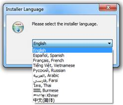
3. Select Next and follow the NSIS Install Wizard instructions to install Martus.
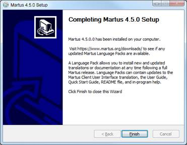
Running Martus
Choose Start > Programs > Martus > Martus, double-click the Martus shortcut on the desktop or in the Martus directory, or choose Start > Run and then type the following text:
C:\Martus\bin\javaw.exe -jar C:\Martus\martus.jar
Upgrading Martus
1. Download the new version or obtain an installation CD.
2. Double-click the file you downloaded or insert the CD into your disc drive. The installer notifies you that you have an older version of Martus installed.
3. Click Yes to upgrade. The new version of Martus is installed into the same directories as the older version. All data files, including account information, passwords, and records, remain intact.
2b. Mac OS
System Requirements
To display your system specifications in Mac, go to the Apple menu > About this Mac > More info… > System report… > Hardware (this is the Hardware Overview).
▪ Mac OS 10.7.3 (Lion) or higher
▪ Java Runtime Environment (JRE) version 1.8.0_40 or later (sometimes called Java8). The Java community is now supporting JavaFX instead of Swing, and in order to support a multi-lingual Martus, this requires Java8. You can check which version of Java is running on your machine by opening a terminal window and typing “java -version” (without the quotes) and hitting enter/return.
▪ 93 MB hard disk space available (100 MB or more recommended)
▪ 1GB RAM
▪ Internet connection, to back up data to the Martus server.
▪ To send records to a Martus Server, your Martus software must not be blocked by a firewall. If you have a software or hardware firewall, it must allow your computer to contact ports 987 or 443, on the Internet. If these ports are blocked when you try to select the server, you will see a message that the server is not responding.
▪ Screen resolution of 960x480 or greater
Install Martus
Automatic installation from a DMG file:
1. Download the Martus DMG file from the Martus website or CD, and select the file.
2. If the Martus folder was not automatically opened, double-click on it to view the contents.
3. While you can copy the Martus application (Martus.app) to your Applications folder, please note that if you do so, it will not be removed when you uninstall Martus, which may be a security concern.
4. The MartusDocumentation folder contains files with helpful information about Martus, including User Guides, Quick Start Guides, and README files that describe the features in each version, all in various languages. We also suggest that you copy this folder to your computer where you can have easy access to it.
Note: If you are using a Martus Language Pack (e.g. Martus-en.mlp), please copy the mlp file to your Martus data folder. For instructions on how to access your Martus data folder, see the section below named "Viewing the Martus Data Folder".
Installation from an ISO file:
Insert the Martus CD into your CD-ROM drive (or download the Martus .iso file from https://www.martus.org) and double-click it to find the DMG. Follow the DMG instructions above.
Running Martus
Double-click the Martus application icon (Martus.app file) from where you copied it.
Running the Mac Terminal:
To display additional information as Martus runs that will be helpful in diagnosing any problems in Mac OSX, you can open a Terminal window:
1. Right-click (cmd + click) the Martus.app file to bring up the popup context menu.
2. From the context menu select "Show Package Contents."
3. The finder will change views to display the "Contents" folder.
4. Navigate to Contents/MacOs.
5. Double click the "JavaAppLauncher"
This will cause a new terminal to start which will contain the console output.
As long as the terminal is running, and troubleshooting or logging information from Martus will appear there. You can copy and paste the text from the terminal into an email to martus@benetech.org.
Viewing the Martus Data Folder:
In Mac OS, the Martus data folder is named .Martus and is located in your Home folder. This folder contains your Martus account and record info, as well as other files created while using Martus, such as report/search templates, Contact account files, etc. (though many of these can also be saved to other folders if desired). The Martus data folder is also where you would place any language pack files. Normally the Martus data folder is hidden, so is not viewable using the Finder application. In order to access these files, you will need to set your computer preferences to "show" this hidden folder. To do so, follow these steps:
1. Go to Finder > Applications > Utilities, and open the Terminal application. (You can also hit Command-Space to bring up the search, enter "terminal", and when it finds the Terminal app, launch it.)
2. Type: defaults write com.apple.finder AppleShowAllFiles TRUE
and hit Enter/Return.
3. Restart the Finder by holding the Option key, and click and hold the Finder icon. When the context menu shows, select Relaunch. (Alternately, you can type the following in the Terminal:
killall Finder
and hit Enter.)
4. When the Finder restarts, you will be able to view the ".Martus" folder within your home directory and access files saved there.
Upgrading Martus
Follow the regular installation instructions in to replace the existing Martus program with the new release.
2c. Linux
System Requirements
Note: Linux does not fully support versions 5.1, 5.0, and 4.5 of Martus (there are several display issues, etc.). If you want to run Martus 5.1 on Linux, you need Java Runtime Environment (JRE) version 1.8.0_40 (sometimes called Java8) and graphic library gtk2 2.18+ (required for supporting JavaFX).
For a fully supported version of Martus, download version 4.4 of Martus and refer to the version 4.3 Martus User Guide.
● Intel Pentium platform running Linux kernel v. 3.2 or later and glibc v. 2.14 or later
● Java Runtime Environment (JRE) version 1.8.0_40 (sometimes called Java8). The Java community is now supporting JavaFX instead of Swing, and in order to support a multi-lingual Martus, this requires Java8. You can check which version of Java is running on your machine by opening a terminal window and typing “java -version” (without the quotes) and hitting enter/return.
● 93 MB hard disk space available (100 MB or more recommended)
● 256 MB RAM (512 MB or more recommended)
● Internet connection, to back up data to the Martus server.
● To send records to a Martus Server, your Martus software must not be blocked by a firewall. If you have a software or hardware firewall, it must allow your computer to contact ports 987 or 443, on the Internet. If these ports are blocked when you try to select the server, you will see a message that the server is not responding.
● At least 16-bit color mode with the KDE or the Gnome desktop recommended
Installing Martus
Note: Version 5.1 of Martus does not fully support Linux (there are several display issues, etc.). For a fully supported version of Martus, download version 4.4 of Martus and refer to the version 4.3 Martus User Guide.
The following instructions will install Martus within your user account only. No other Linux users on this machine will have access to Martus. If you want to install Martus publicly, so that any user on this computer can run it, please see section “10. Frequently Asked Questions.”
Most of the following must be done from a terminal command prompt.
1. See what version of Java you are currently running by typing:
java -version
Java must be installed and in your PATH for this to work.
You must have (or install) either Oracle’s official Java version 1.8.0_40 (sometimes called Java8). If possible, we recommend using the standard software installation tools from your operating system, such as yum/rpm or apt/deb. If you want to run Oracle's JRE but it is not available that way, you can download it directly from http://java.com/
Note: To run Martus, you only need to install the current version of Java Runtime Environment (JRE), not the larger Java Developer’s Kit (JDK).
2. Choose and create a directory to hold the Martus program files (i.e. a “Martus program directory”). This may be the same as the Martus data directory (~/.Martus/) or may be different. For example, you might install the Martus application within your Desktop directory, making it easy to find. Separating the program from the data may increase security, but will make it harder to entirely erase Martus if you needed to do so. You would make the directory by typing the following at the prompt in the location you choose:
mkdir -p <Martus Program Directory>
For example, if you wanted to install the Martus 4.0 into its data directory, you would type:
mkdir -p ~/.Martus
3. If installing from the CD/ISO:
a. Copy martus.jar from the root directory on the installation CD into the Martus program directory.
b. Copy the LibExt directory from the CD into Martus program directory, and rename it as ThirdParty.
c. If desired you can also copy the Documents directory which contains user documentation including the README files that contain a list of changes between versions of Martus.
d. Change to the directory that contains the actual application, by typing the following:
cd <Martus Program Directory>
For example, if you installed Martus into its data directory, you would type:
cd ~/.Martus
4. If installing from the zip file:
Change to the directory you created to install Martus into, extract the zip file contents there, and change to the directory that contains the actual application, by typing the following:
cd <Martus Program Directory>
unzip <Path to Zip File>
cd <Martus Version Directory>
For example, if you wanted to install the Martus 4.5 into its data directory, and the zip file was in ~/Downloads and named MartusClient- 4.5.zip, you would type:
cd ~/.Martus
unzip ~/Downloads/MartusClient- 4.5.zip
5. Test the installation by running Martus, by typing:
java -jar `pwd`/martus.jar
(You do not have to type out the name of the directory you are in, since `pwd` does that for you. )
6. You can create a shortcut script as follows:
echo java -jar martus.jar >martus
chmod +x martus
7. You can copy this script elsewhere, or you can set up a launcher or shortcut to it, to make it easy to start Martus.
Running Martus
To start Martus in Linux, run a script you’ve created or type:
java -jar <Martus program directory>/martus.jar
Upgrading Martus
Follow the regular installation instructions in to replace the existing Martus program with the new release.
2d. Choose a password
To keep your data secure, you need to use a password that cannot be easily discovered or guessed. Before creating a Martus account, use the following guidelines to develop a password that you can use confidently, and that you can remember. You are the only one who knows your password; if you forget your password, you may not be able to access your Martus data (unless you have done a 3-part backup of your account, for more information see 8a Backing up your key.)
▪ Do not use your username.
▪ Do not use just one word that can be found in a dictionary.
▪ Use at least 15 characters for most security (8 are required).
▪ Use a combination of alphabetic characters, numbers, and special characters (such as !@#$%^&*).
▪ Use a combination of uppercase (capital) and lowercase characters if you use a case-sensitive language.
▪ If you must write down your password, keep it in a secure location separate from your Martus installation.
▪ Create a reminder statement for yourself, and keep it somewhere secure. (Remember that if your reminder statement jogs your memory, it could also provide a clue to someone attempting to discover your password.)
▪ Use a password that can be remembered (use characters that are meaningful to you).
▪ Develop a simple method for choosing new passwords.
▪
Change your password if you feel that your account has been
compromised. See “8f. Change your username or password8f.
Changing your username or password” for information.
▪ If you forget your username or password, there is no way for you to access the records you have created or any of the data on your computer unless you have performed a multi-file key backup (or have a Contact that can retrieve your records.)
2e. Create an account
1. Start Martus.
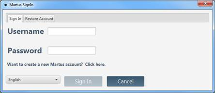
2. Select a language from the dropdown in the Martus SignIn dialog box. Select “Want to create a new Martus account?” and the Martus Setup Wizard will walk you through account creation.
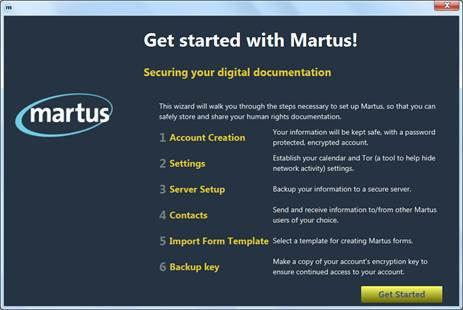
3. The next time you open Martus, input your username and password in the Martus Sign In dialog box to access your account.
2f. Server Settings
View Current Server Connection
1. Select Settings > Server Settings.
2. Choose Current Connection to view the Server IP and Public Code of the current server.
Configure a Server
1. Select Settings > Server Settings.
2. Choose Server Setup.
3. Select a server.
● Select Connect to Default to use a Martus server without manually inputting any server information; or
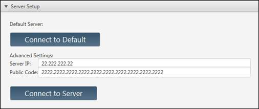
● Input the Server IP and Public Code of the server of your choice in the Advanced Server Setup section and select Connect to Server.
4. A server compliance message will appear. Select Accept if the server compliance statement meets your needs. If the server doesn’t meet your needs, select Reject and then select a different server.
Note: Server compliance guidelines are available at https://www.martus.org/, in the “Download Martus Server” section. Compliant servers are expected to be secure; servers that deviate from the server compliance guidelines may be less secure. If you have questions about whether a server meets your needs, ask the person who determines policies for using Martus in your organization—or send a message to martus@benetech.org.
Manage Server Defaults
1. Select Settings > Server Settings.
2. Choose Server Preferences.
a. Have Server Default to On?: Select Yes to automatically connect to a server whenever using Martus.
b. Automatically Download Files from Server?: Select Yes to download records from the server at regular intervals of your choosing.
3. Select Save Changes.
2g. System Preferences
Choose a Language
If you are logged into a Martus account, you will need to exit the application to switch the user interface language.
1. Close and restart Martus.
2. Select a language from the dropdown in the Martus SignIn dialog box.
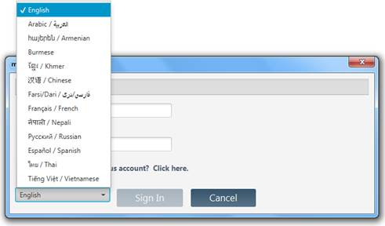
3. Sign into or create an account.
Manage Calendar Settings
1. Select Settings > System Preferences
2. Choose your preferred Date Format Sequence, Date Delimiter, and Calendar Type using the corresponding dropdown menus.
3. Select Save Changes.
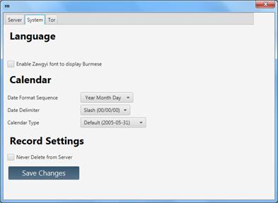
Manage Deletion of New Records from Server
1. Select Settings > System Preferences
2. Check/uncheck Never Delete from Server to disallow/allow deletion of new records sent to the server.
Note: This action only affects new records saved to the server after updating this option.
3. Select Save Changes.
2h. Tor Preferences
Using Tor will make it harder to track the route your record takes to the Martus server, and may allow you to reach the Martus server if it is blocked from your current location, but will also make sending and receiving records slower. For more information about Tor, go to https://www.torproject.org/ or see “10. Frequently Asked Questions.”
Using Tor
Turn embedded Tor On and Off using the Tor switch in the main Martus taskbar. Select Settings > Tor Preferences for more information about Tor.
3. The Martus Workspace
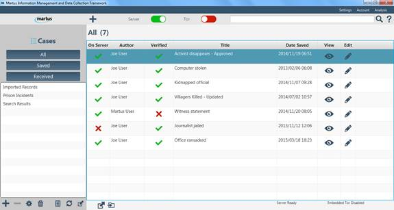
The Main Taskbar
● Create a record with the click of a button!
● Toggle your Server connection On and Off:
● Turn embedded Tor use On and Off:
● Perform a simple text Search across all of your records.
● Select Help for information about your Martus version and Martus documentation.
The Record List Pane
● Sort your records by multiple fields:
On Server (indicates whether or not the record has been saved to your configured server)
Author
Verified (indicates whether the record was created by a contact that you have verified)
Title
Date Saved
● View
 and Edit records
at your convenience.
and Edit records
at your convenience.
● Delete , Export , Move , and Copy records.
The Sidebar
● Customize and organize your Cases (which function like folders) with the Label Manager and the Add and Delete options.
● Manage deleted records in the Trash .
● Use the Template Manager to upload, download, and edit customized form templates.
● Upload and download records using the Sync Manager .
● Import Records into Martus from your local device.
A single computer may have multiple Martus accounts. When Martus has been inactive for 5 minutes, it requires you to log in again for security purposes.
4. Create a Record
2. Input a Title.
3. Select Add Contact to add contacts with whom you want to share the record.
● For more information on configuring Contacts, see “8e. Sharing your data with Contacts.”
4. Select Template Selector to choose a different form template for your record.
●
There are various ways to customize how records are displayed in
Martus that are described further in section “9b. Customize your
record display9b. Customizing your record display.”
5. Input information in the relevant record fields.
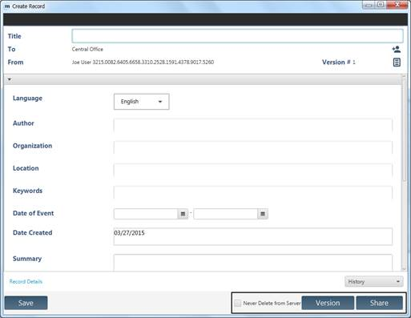
Martus Standard Fields
● Language - Choose the language you’re using to describe the event. If you are using a language that isn’t included in the list, choose Other.
Note: You can type your record in any language, regardless of the language selected for the user interface.
● Author - The Author name from your contact information appears here, but you can change it.
● Organization – The Organization name from your contact information appears here, but you can change it.
● Location - Type the location of the event. Depending on the scope of the event, you may enter a country, region, city, or other location. If it doesn’t make sense to enter a location, leave the field blank.
● Keywords - Type words that are synonyms for acts you described in the record, other related words, and alternative location names, if appropriate. This is especially helpful for searching.
● Date of Event - Enter the date of the event you’re reporting. Leave the date as Unknown if you are uncertain when the event occurred.
● Date Created - This will be the current date from your computer. You cannot edit this field.
● Summary - Type a summary of the event.
● Details - Type any additional details related to the event.
● Additional Information – Input any additional information not covered by other fields.
Add an Attachment
1. Select the Attachments tab within the record window.
2. Click Add and then select the file you want to attach.
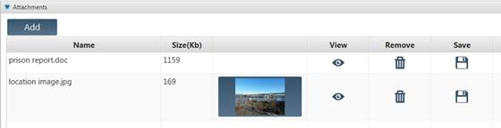
Note: Records with large attachments will take longer to save, send to the server, retrieve from the server, or move to or from the desktop.
View an Attachment
When creating, editing or viewing a record with an attachment:
1. Select the Attachments tab within the record window.
2. Select the View icon,, for the appropriate attachment.
Note: If the attachment is an image (e.g. photo or scanned document) of certain file types (i.e. jpg, png, gif), the image will be displayed as a thumbnail and in a View Attachment window. Other types of files will be opened outside of Martus by the program you have set on your computer to open that type of file.
For image attachments with associated geo-location meta-data:
3. Select Show on Map to view the location the image was taken on a map.
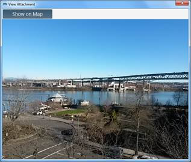
Note: Using the Show on Map function will bypass embedded Tor if you have it turned on.
4. Select Return to image to exit the map.
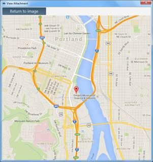
Save an Attachment
When creating, editing or viewing a record with an attachment:
1. Select the Attachments tab within the record window.
2. Select the Save icon,, for the appropriate attachment.
3. Choose a location to store the attachment and select Save.
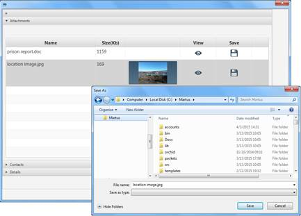
Delete an Attachment
1. Select the Attachments tab within the record window.
2. Select the Remove icon,, for the appropriate attachment.
5. Save and Edit Records
Martus automatically saves backup copies of saved, versioned and shared records to the Martus server as long as your configured server is set to On in the Martus main taskbar.
All saved, shared and versioned records will be listed under the Saved label. When a record has been successfully sent to the server, a check mark appears in the On Server column though there may be a delay before the column is populated.
If you do not have an Internet connection, or if your computer cannot connect to your designated server, the record remains unsent, and the On Server column will display an X. If you have not yet configured a server, the Sent column will be blank. As soon as you connect to the Internet, and a valid Martus server is configured, Martus sends all waiting records to the server. Martus will alert you to any records waiting to be sent to the server when you end a session.
5a. Save a record
Selecting Save once you have created a record allows you modify the original record at a later time without creating a new version of that record. Once you edit and Save a record, you cannot restore the previous version of the record.
1. Choose Create new record () or Edit () a record and input data.
2. Optional: Select Never Delete from Server.
3. Select Save.
5b. Version a record
Versioning a record allows you to update information in the record but keep older versions intact, and prevents the earlier versions of the record from being edited. Versions of each record are connected, creating a new copy does not increase the total number of records (e.g., in searches).
1. Choose Create new record () or Edit () a record and input data.
2. Optional: Select Never Delete from Server.
3. Select Version.
Alternately, you can create a copy of a record to use as a starting point for a new record.
5c. Share a record
Selecting Share will version the record as well as allow Contacts of your choice to read the content (usually by downloading it from the server).
1. Choose Create new record () or Edit () a record and input data. Select the Add Contacts icon.
2. Select the box(es) next to the Contact(s) with whom you would like to share the record.
3. Select OK.
4. Optional: Select Never Delete from Server.
5. Select Share to save the record.
For information about adding other Martus users as contacts, see “8e. Sharing your data with Contacts.”
5d. Permanently save a record
To ensure that a record is never permanently deleted from the server, even if it is deleted from your local device, Martus offers the option to - individually or as a default - never delete records from your configured backup server.
Permanently Save to the Server by Default
1. Select Settings > System Preferences.
2. Check Never Delete from Server.
3. Select Save Changes.
Permanently Save Individual Records to the Server
1. Choose Create new record () or Edit () a record and input data.
2. Select Never Delete from Server.
3. Choose to Save, Version, or Share.
5e. Edit a record
1. Select the record that you would like to edit.
2. Choose the corresponding Edit icon ().
3. Input/change any record data.
4. Choose to Save, Version, or Share.
Tip: Consider changing the title of the modified version of the record in a way that makes it clear that it contains corrected or additional information. For example, if the original versioned record is titled “Political leaders jailed,” you might title the modified version “Political leaders jailed – updated.”
5f. Discard changes
To discard the information you’ve entered in a record, click Cancel. Martus alerts you that you’ll be deleting any unsaved information in the record, since it was last saved. Click Yes to discard the unsaved information permanently. (If you click Cancel when you’re modifying a record, the record will revert to the state it was in when you opened it.)
6. Manage Records
For each record, Martus lists the record's status, whether it was sent to the server, the date saved, the record title, the record's author, and if it was created by a verified contact.
View a Record’s Details
From the Martus List Pane:
1. Select the desired record.
2. Select the corresponding View icon. A separate window will display the chosen record.
3. Select the Details section label to view the record’s Author, Author’s Public Code, Record ID, Date Created, and Last Modified date.
While Creating/Editing a Record:
1. Select Record Details from the bottom of the Create Record window. A separate Record Details window will open with the record’s Author, Author’s Public Code, Record ID, Date Created, and Last Modified date.
2. Select OK to exit.
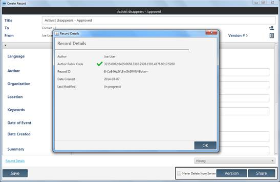
Views and folders help you manage the records you’ve created or retrieved from the server. Martus includes some default views and folders, and automatically creates others for specific purposes; you can create additional folders to organize records further. When you select a folder, its contents are listed to the right.
6a. Default views and folders
Martus automatically includes three permanent views: All, Saved, and Received.
These default labels are different from some earlier versions of Martus. If you upgrade from a version earlier than Martus 5.0, your old labels will automatically be migrated to this new folder structure, so your records will not be lost.
All records on your local machine will be listed under the All view.
The Saved view contains all records that you have saved, whether they are versioned or not or shared with contacts, and whether they have been sent to the server or not.
This view contains records you’ve received from another Martus user. These records are included in searches and you can copy or move them to different folders.
An Imported Records folder will be created if you load any records into Martus using the Import Record icon in the Martus sidebar.
6b. Create folder labels
Customize your folder Labels
Martus automatically classifies your folders as “Cases,” however they can be renamed to fit your needs.
1. Select the Label Manager icon from the Martus sidebar.
2. Select one of the default names: Cases, Incidents or Projects; or
Select Custom Name and input a name of your own choosing.
3. Select OK to exit.
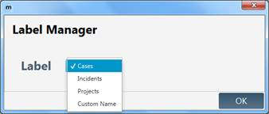
Create New Folders
Create additional folders to categorize records according to your interests or current projects.
1. Select the Add icon from the Martus sidebar.
2. Input a name for the new folder.
3. Select Create.
Rename Folders
1. Double-click the folder you would like to rename.
2. Input a new name for the folder.
3. Select Rename.
Note: You cannot use punctuation in a folder name, but you can include spaces. You can also use characters from non-Latin alphabets, such as Arabic or Russian.
You can’t rename permanent views such as All, Saved, and Received.
You can rename the Imported Records folder, however Martus will create a new Imported Records folder the next time you import data into Martus.
Delete Folders
Deleting a folder removes the folder and moves all records under that label to the Trash.
1. Select the folder you would like to remove.
2. Select the Delete icon from the Martus sidebar.
3. Read the informational text.
4. Select Delete to confirm deletion.
6c. Discard and delete records
Delete Records
Deleting a record from a folder does not delete the record from your local device or the server. The record moves to the Trash, located in the Martus sidebar where it can still be viewed or moved, but not edited.
1. Select the record you would like to delete.
2. Select the Delete icon in the taskbar below the main list pane.
Delete Records from your Hard Drive
Once you delete a record from your hard drive, you cannot retrieve it unless it is stored on the server.
1. Select the Trash icon from the Martus sidebar.
2. Review the records listed in the Trash to be sure you do not accidentally delete important records.
3. Select Empty Trash.
You do not need to do anything further to ensure that deleted records are removed from your hard drive. Unlike most computer data, Martus records are encrypted files on your hard drive—including your own records, records created by other people, and deleted records. Therefore, unless someone gains access to your Martus account, they cannot read the records you store in your folders or the records you’ve deleted.
Delete Records from the Server
Once you delete a record from the server, you cannot retrieve it unless you have a local or exported copy.
1. Select the Sync Manager icon from the Martus sidebar.
2. Select the desired record.
3. Select Delete from Server.
Note: If the Delete from Server option is not available for the record you have selected, the record has either not been uploaded to the server or is a record shared with you by another Martus account. Shared records cannot be deleted from the server by anyone but their original author.
6d. Move records
1. Select the records that you would like to move.
2. Select the Move icon () in the taskbar below the main list pane.
3. Select the folder under which you would like the record to be moved.
4. Uncheck Remove from… to keep the record(s) listed under multiple folders.
Note: The multiple listings will still be considered one record.
5. Select Move.
Note: You may also create a new folder in which to save your search results using the Add icon in the Martus sidebar and then following the above directions after performing a search.
6e. Copy a record
Unlike moving a record, copying a record creates a new record based on the original. The new record must be renamed to differentiate it from the original.
1. Select the record that you would like to make a copy.
Note: Only one record can be copied at a time.
2. Select the Copy icon () in the taskbar below the main list pane.
3. Enter a new name for the copy of the record.
4. Uncheck Remove from Existing? to keep the record(s) under multiple folders.
5. Select Copy.
6f. Export record data
Martus allows you to export encrypted (*.mba) and unencrypted (*.xml) record files which can then be imported back into Martus.
Exporting Encrypted Records
Encrypted records are exported as .mba (Martus Bulletin Archive) files.
1. Select the records you want to export.
2. Select
the Export icon ( ) in the taskbar below the main
list pane.
) in the taskbar below the main
list pane.
3. To specify a location other than your Martus directory to export selected records, select Send To
4. Select a location from the Export to which folder? window.
5. Choose Select Folder.
6. Select Export from the Export window.
Exporting Unencrypted Records
When exporting unencrypted records, all information will be saved as plain text and anyone who gets a copy of the file will be able to read its contents. These files can be used to import record data back into Martus or into another application.
1. Select the records you want to export.
2. Select the Export icon in the taskbar below the main list pane.
3. Uncheck Encrypted?
4. Check Include attachments to export any record.
5. To specify a location other than your Martus directory to export selected records, select Send To
6. Select a location from the Export to which folder? Window
8. Select Export from the Export window.
6g. Import records
You can import encrypted .mba record files or unencrypted XML record files.
1.
Select the Import Record icon ( ) from the Martus
sidebar.
) from the Martus
sidebar.
2. Navigate to the location of the record you want to import.
3. Change the File type option if necessary to find your record.
4. Select Open. The record will be placed under the Imported Records folder.
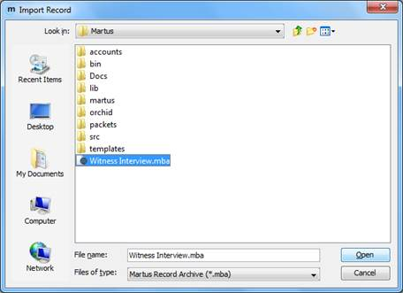
To find out more about creating Martus XML import files from your electronic data (for example, spreadsheets or other databases), please see examples in the Martus source-code (available on the Martus CD or at https://code.google.com/p/martus/source/browse/?repo=martus-csv2xml#hg%2Fdocs%2Forg%2Fmartus%2Fmartusjsxmlgenerator%2Fdocs) and email martus@benetech.org if you need additional assistance.
If you have a very large file to import, or your import has a lot of special characters in it (e.g. < > ' " ) you may receive import errors. If the size of the file is the issue, you can try splitting into smaller files. Please contact martus@benetech.org if you need help with any import issues.
6h. Download records
The Martus Sync Manager allows you to upload and download records to/from the server as well as view where your records are located as well as which records are authored by you or your contacts.
1. Select the Sync Manager icon from the Martus sidebar.
2. Select the desired record.
Note: The Sync Manager may not appear immediately, depending on the speed of your Internet connection.
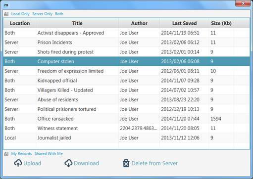
Tip: You can filter the records in the Sync Manager screen by selecting the following options:
All - All your records regardless of location or creator.
Local Only - Records only located on your hard drive.
Server Only - Records only located on the server.
Both - Records located on both the server and your hard drive.
My Records - Records created by you.
Shared With Me - Records created by another Martus User.
3. Select the records you would like to download.
4. Select Download.
Note: If a record has already been downloaded to your local device, the Download button will not be available.
6i. Upload records
The Martus Sync Manager allows you to upload records to the server if you have not chosen to back them up automatically or have not had an internet connection.
1. Select the Sync Manager icon from the Martus sidebar.
2. Select the desired record.
Note: The Sync Manager may not appear immediately, depending on the speed of your Internet connection.
Tip: You can sort the records in the Sync Manager screen by selecting the following options:
All - All your records regardless of location or creator.
Local Only - Records only located on your hard drive.
Server Only - Records only located on the server.
Both - Records located on both the server and your hard drive.
My Records - Records created by you.
Shared With Me - Records created by another Martus User.
3. Select the records you would like to upload.
4. Select Upload.
Note: If a record has already been uploaded to your configured server, the Upload button will not be available.
6j. View earlier versions of a record
You can view any version of a record on your computer. However, you can only make changes to a new version.
View Past Record Versions
1. Select the desired record and choose the Edit icon () for that record.
2. Select the History dropdown form the Create Record window.
3. Select the record version you would like to view from the list. A separate window will display the past record version.
4. Select OK to exit to the Create Record window.
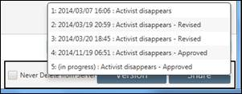
Note: If you are allowed to retrieve records from a Contact and you didn’t have access to an earlier version of a Contact’s record, Martus will list the earlier version in the record details, but it won’t retrieve that version of the record to your computer.
6k. View damaged records
Occasionally, data may be lost or garbled in a record stored on your computer. If Martus detects missing data, it displays a yellow warning at the top of the record that reads: “Warning: Portions may be missing or damaged.” Often, you can still read some information in the record. If the record is also stored on the server, you may be able to retrieve the entire record successfully: drag a backup copy of the record to your desktop, delete the record from Martus, and then try retrieving it from the server. You may also see this message when viewing the records of another user because you cannot view their records unless you are one of their Contact accounts.
6l. Search for specific records
Martus searches all records every label, unless the record only exists in the Trash.
Perform a Simple Search
The simple search allows you to search your records from the Martus main taskbar.
1. Input your search terms in the Search field of the Martus main taskbar.
2. Select the Search icon () or simply hit Enter on your keyboard. Your search results will be listed in the record list pane under the heading Search Results.
Saving Your Search Results
1. Once you perform your search, select any results that you would like to save.
2. Select the Move icon in the taskbar beneath the list pane.
3. Choose an existing folder.
4. Select Move.
Note: You may also create a new folder for your search results using the Add icon in the Martus sidebar and then follow the above directions to perform a search.
Perform an Advanced Search
1. Select Analysis > Advance Search
2. In the Search dialog box, select the field to search, indicate how the record field should compare to the search terms, and enter the word(s) or date(s) you are searching for. You can search for words in any language. If you are searching for terms in a multi-item list, select which detail in the item to search. When selecting text fields, you can ask Martus to scan and load all the values that have been entered for those fields in your records on the local computer by selecting the Load all possible values for selected field checkbox in the field selection screen. For other field types the checkbox will be “grayed out” (i.e. not selectable).
There is also a Load all possible values for selected
field button in the main Search screen, if users want to load field
values without going into the field selection screen (for example, after loading
a previously saved search, or if they did not select the checkbox in the field
selection screen). For “data-driven dropdown” (dropdown lists created by data
entered in record grids), the values that were entered in records are
automatically loaded when the field is chosen in the Search screen. See
section “9c. Customize record fields9c.
Customizing record fields” for more about data-driven dropdown
fields.
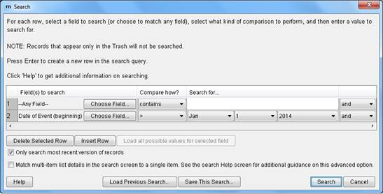
Note: If multiple fields have the same label in the field selection screen, click the plus sign next to the label name to choose the appropriate field. Martus displays the tag name and field type (e.g., “text”) for each field with that label. If you have multiple dropdown fields with the same label, Martus will merge all the values into one list in the Search screen. Any customized field labels that contain only spaces will be replaced with that field's tag in the search field list.
3. If you would like to add additional search constraints, press Enter or click Insert Row to create a new search row. You can search another field or limit your search to a certain date or date range.
4. If you would like to delete a search constraint, select that row and click Delete Selected Row.
Note: There are several ways record fields can compare to search terms.
contains : Any records in which the specified field contains the search terms
= : Only the records in which the specified field exactly matches the search terms
!= : Records in which the specified field does not match the search terms
> : Records in which the field’s value is greater than the search value
>= : Records in which the field’s value is greater than or equal to the search value
< : Records in which the field’s value is less than the search value
<= : Records in which the field’s value is less than or equal to the search value
5. Click Search. A dialog box will display the search progress, and allow you to cancel the search at any time if you wish.
6. When the search is complete, the Search Results dialog box reports how many records were found that matched your criteria. Click OK.
7. The Search Results folder lists the records found in your search. (The folder contains copies of the records; the originals remain in their original folders.) If your search resulted in no records, the Search Results folder will still contain the records from the previous search.
Searching for Records Notes
●
Martus searches all versions of every record. Search criteria may match
an earlier version of the record. To access previous versions click the Record
Details… button at the bottom of the record. For more information, see “6j.
View earlier versions of a record6j. Viewing earlier
versions of a record.”
○ To search only the most recent versions of records, select Only Search Most Recent Versions of Records in the Search dialog box. The Search dialog box will remember this selection the next time you run a search.
●
Martus searches all rows of any grid (table) fields for criteria and
doesn’t require that the terms are all on the same row. See section “9c.
Customize record fields9c. Customizing record
fields” for more information about grid fields.
○ To specify that all grid column specifications in the Search screen be matched to a single row of record grid data, check the Match grid column specifications… checkbox in the Search screen. For example, to search for a specific victim name in a single grid row created after a certain date, select the checkbox and enter the following fields in the Search screen: "Victim Information: First Name" = x and "Victim Information: Last Name" = y and "Date Created" >= YYYY-Mon-DD. Without selecting the Match grid column specifications… checkbox, Martus will find records created after the specified date where any row has the first name specified and any other row has the last name specified.
● Because Martus searches all rows of any grid (table) fields for criteria, it may find records where one grid row matches your criteria but other rows do not. For example assume a record with multiple rows of data corresponding with locations A, B, and C. When searching for records where location != C (does not equal C), Martus will find that record as there are 2 rows in the record grid where the location is not C.
● Searches on a multi-level dropdown are exact matches, not partial or “starts with” matches, searches must pick the exact level that should be searched. For example, an “Event Location” field that has three levels (State/City/Neighborhood) will have three entries in the search field list: Event Location: State, Event Location: City, and Event Location: Neighborhood. To search all records that have an Event Location anywhere in California (regardless of the City), select the “Event Location: State” field to search on and pick California off the dropdown list choices. If selecting Event Location: City to search on and then pick California but leave the City level blank, Martus will only find entries where there was no City data entered (City was blank), as opposed to ANY location with California regardless of what data was entered at the City level.
●
Martus may use the tag and field type to try and determine when
different fields were meant to be the same when it searches. We encourage you
to make field tags and labels in a customization clearly related to each other
to avoid any confusion. See section “9c. Customize record
fields9c. Customizing record fields” for
more information about configuring custom fields.
For some additional help with searching, see section “10. Frequently Asked Questions”, or email martus@benetech.org.
To save your search criteria, click Save This Search in the Search dialog box. Then, give the search criteria a name you’ll recognize later. Martus saves it with the .mss (Martus Search Specification) extension in the folder you choose. To use search criteria you’ve saved, click Load Previous Search in the Search dialog box, and then navigate to the .mss file you want to use.
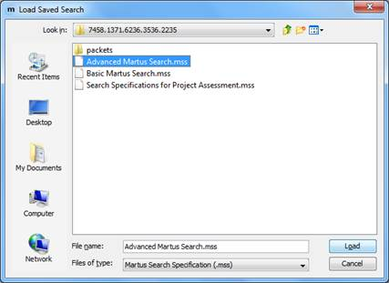
Note: Martus will remember the immediately previous search criteria without you needing to load it.
● To search for an exact phrase, type it with quotation marks around the phrase (e.g., "Witness Testimony"). If you do not put quotation marks around the phrase, Martus will search for the words individually.
● Martus will find the text you enter whether it’s a complete word or part of a larger word. For example, if you search for the word prison, you’ll see records that include the words prison, imprison, and imprisonment. Likewise, if you search for the word prison, Martus will find records that include attachments with names such as photos-prison.jpg and prisoners-report.doc.
● You can search for words in any language. Martus searches are not case-sensitive in English and other purely Latin character languages, so it doesn’t matter whether a word is capitalized or not.
● Use the word “or” to broaden your search, or the word “and” to narrow it. You can use the and / or dropdowns to specify different fields you want search across (e.g., you want to search for records that have "Last Saved Date" in the last week and have a certain author). If you want to search on multiple text values within a single record field, you can use “or” or “and” in-between words in the Search For... entry box. For example, if you search "Any Field" for prison or jail you’ll see a list of records that contain either word anywhere in the record. If you search for prison and assault you’ll see a list of records that contain both words. The keyword "and" is implied, so if you search for prison assault Martus will find the same records as if you searched for prison and assault.
● When you use both "and" and "or", your search terms are grouped from the beginning of your list (either across record fields or within a particular field). For example, if you enter prison or jail and trial in the Search For... entry box, Martus will search for any records that contain either of the words prison or jail, and also contain the word trial. But if you enter prison and jail or trial Martus will search for any records that contain both the words prison and jail, or contain the word trial.
● If you are using a language other than English, you can use the translation of the words "or" or "and" in that language or you can use the English words "or" and "and" to search. For example, if you are using Martus in Spanish, use the word "o," "y," "or," or "and" when searching.
● For languages that do not use spaces to separate words, you need to put spaces before and after any “or” / “and” keywords you use in your search.
6m. Create record reports
You can create customized reports from information in the records on your computer, and then print those reports to a printer or to an HTML file (which can be opened in a browser, or other application such as word processor or spreadsheet for further editing/formatting if desired.)
To create a report:
1. Choose Analysis> Reports.
2. To create a new report format, click Create New Tabular Report or Create New Page Report. A tabular report lists record fields as columns in a table, with each record as one row in the table. A page report lists the selected subset of fields from each record separately, and is formatted as records appear when printed individually.
If you want to use a report format you’ve previously saved, click Use Existing Report Format, open the saved .mrf (Martus Report Format) file and skip to step 5.
3. In the Create Report dialog box, select the fields you want to include in the report, and then click OK.
If you’re creating a tabular report, click Add in the Organize Report Fields dialog box to open the Create Report dialog box, select the fields you wish to include and hit OK. You can then change the order of fields on the report by selecting a field and clicking Move Up or Move Down. Click OK when you’ve arranged the fields the way you want them.
4. In the Save Report Format As dialog box, enter a name for the format you’ve created, and then click Save. Martus saves the report format with an .mrf extension in the directory you choose (it will put it in your Martus account directory by default).
Note: If you cancel out of the Save Report Format As dialog box, your report format will be lost. You must save each report format you create in order to run the report.
5. In the Search dialog box, enter the criteria for records you want to include in your report. To use search criteria you’ve previously saved, click Load Previous Search. When you’ve entered the search criteria, click Search. For more information on searching, see “6m. Searching for specific records.”
Note: Martus will remember the immediately previous search criteria without you needing to load it.
6. Specify the records’ order in the report. You can select up to three fields by which to sort. Martus sorts the records by the first field you choose, and if multiple records have the same information in the first field, it then sorts by the second field, and finally by the third field. For each field, click Choose Field…, select the field you want Martus to sort by, and click OK.
Note: Martus will remember the immediately previous sort selection until you exit Martus.
7. Choose whether to print only the record information, only summary counts, or both. If you include summary counts, the report contains total counts of records grouped by the fields you’ve chosen to sort the records on. For example, if you’re sorting by author and you choose to print the record information and summary counts, the report will include the record data and a summary of how many records were created by each author.
8. Martus displays a preview of the report that will print. Click Print to Printer to print the report to your printer. Click Print to File to save the report as an HTML file that you can open in a web browser or word-processing/spreadsheet application. If you want to make changes to the report before printing, click Cancel, choose Analysis> Reports, and create a new report format.
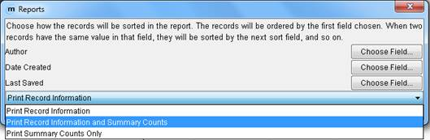
Note: You can copy and paste text from the preview screen directly into other applications, e.g., word-processors or spreadsheets.
Note: Martus only displays data from the latest version of each record on your computer in the report.
See examples of reports below:
Tabular report with summary counts:
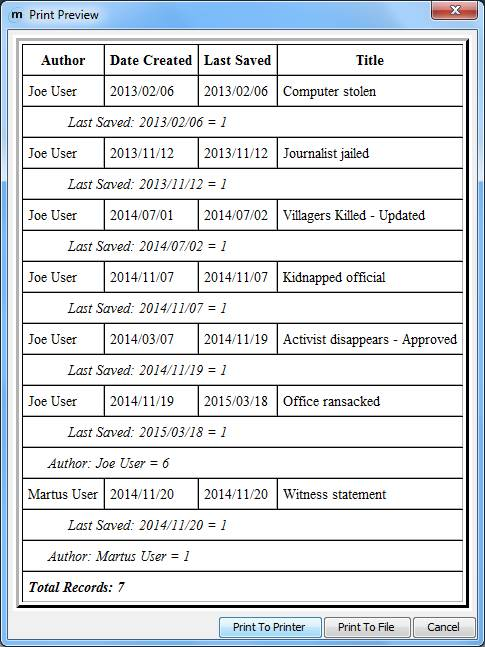
Page report without summary counts:
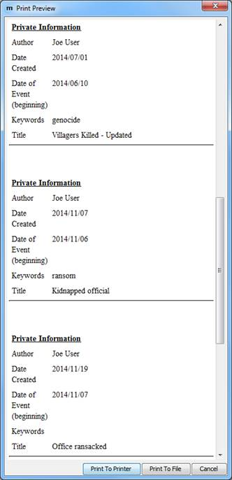
Important Notes:
● Martus reports are intended to give you information about the status/progress of data that has been gathered and entered in Martus, but not to analyze “what happened” from the data that has been entered. So for example we can count the number of records that came from a particular time frame or region (if your project is collection that information), but not how many killings there were in a particular region.
● Martus reports are also meant to focus on fields in which the information is distinct for a record or source document. For example, you can design reports to search for all records entered by a certain user, or given by individuals of a given ethnicity (if your project is collecting that information).
● Martus reports do not correct for the following:
○ Sampling bias (e.g. all records entered being more from one particular region than any others, even if the project is covering incidents that happened across all of them).
○ Duplicate reporting (i.e. more than one record may exist about the same incident, or the same person may be mentioned using different names, or there may be multiple people with the same name).
○ Data quality issues (e.g. typos that might lead to a search not finding records, fields being left blank where values were expected). Some of these issues can be addressed in a project customization, by requiring certain fields to be entered before a record or grid row can be saved, or using dropdown fields to avoid typos and guarantee consistency in searching.
○ Possible inconsistency in how data is entered in Martus by different people. For more on this topic, see “Controlled Vocabulary” and the “Inter-rater Reliability” section on https://hrdag.martus.org/resources/core_concepts.shtml.
● Martus reports especially should not attempt to count the number of violations, victims or perpetrators, beyond counting the number of records that match search criteria. Before counting violations or victims/perpetrators, important data processing needs to take place before such counting can be considered scientifically defensible. This includes addressing the possibility of duplicate reporting (more than one record may exist about the same incident); representing the complexity of human rights violations (an individual who was the victim of a given act may later become the perpetrator of a different act, or vice versa); and maintaining consistency in meaning and counting (ensuring, for example, making sure that all the data entered in records used consistent definitions for violations.)
● If you would like to perform descriptive or qualitative analysis of the information entered into Martus, Benetech can help you to use a tool to export and summarize data for your project. The exported data may be able to be reviewed using analytical tools, but please keep in mind that quantitative or inferential statistical analysis cannot be performed until additional steps have been taken in processing the data, and without enough volume and different sources of data, statistical analysis may not give meaningful or reliable results.
6n. Create record charts
You can create customized charts from information in the records on your computer, and then print those reports to a printer or to a JPEG image file (which can be opened in various applications such as image display tools, or a word processor for further editing/formatting if desired.)
To create a chart:
1. Choose Analysis > Charts.
2. Select click Bar Chart, 3D Bar Chart, Pie Chart, or Line Chart from the Type of Chart dropdown list. A Bar or 3D Bar Chart shows counts of records for each value of the field you select, while a Pie Chart shows both the counts of records and the percentage of total records that match your defined search criteria (chosen when you create the chart). A Line Chart shows the number of records created over the life of an account. See examples below for each type of chart.
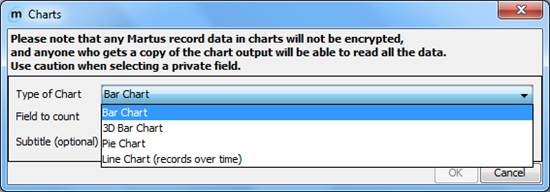
Note: Any data displayed in charts will not be encrypted. Anyone accessing the chart (in printed or electronic form) will be able to access all the included data.
3. Click on the Choose Field… button to select the field you want to include in the chart, pick a field from the list (which will include all the standard or custom fields that are in any of the records on your computer), and then click OK.
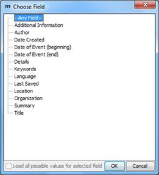
4. If desired, enter text that will be displayed beneath the title of the report in the Subtitle field (e.g. “Human Rights Organization data collection monthly status report”).
5. Hit the OK button.
6. In the Search dialog box, enter the criteria for records you want to include in your chart. To use search criteria you’ve previously saved, click Load Previous Search. When you’ve entered the search criteria, click Search. For more information on searching, see “6m. Searching for specific records.”
Note: Martus will remember the immediately previous search criteria without you needing to load it.
7. Martus displays a preview of the chart. Click Print to Printer to print the report to your printer (Martus will automatically scale the printout to fit the page width, based on your printer preferences). Click Print to File to save the report on your computer as a JPEG image file that you can open in the image display program of your choice, or copy/insert into a word-processing application. If you want to make changes to the report before printing, click Cancel, choose Analysis > Charts, and create a new chart.
Note: Martus only displays data from the latest version of each record on your computer in the chart.
Examples of charts:
Bar Chart:
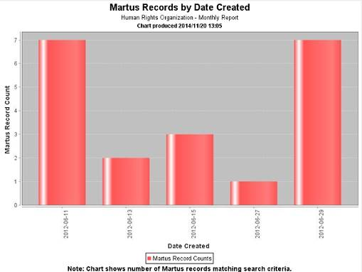
3D Bar Chart:
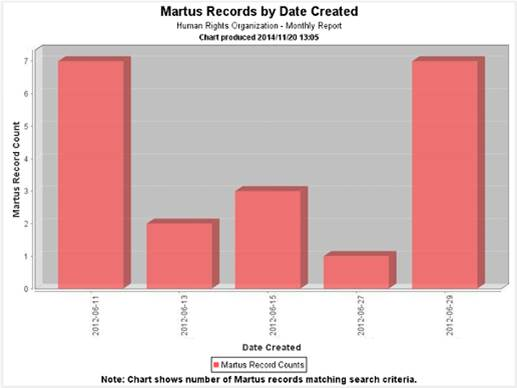
Pie Chart:
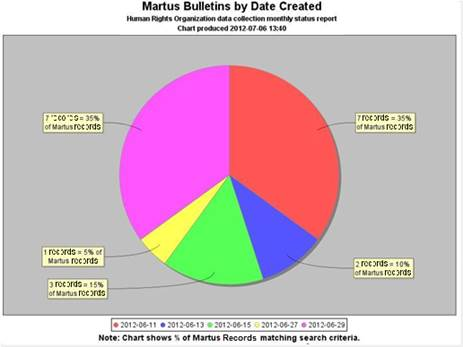
Line Chart (Records over Time):
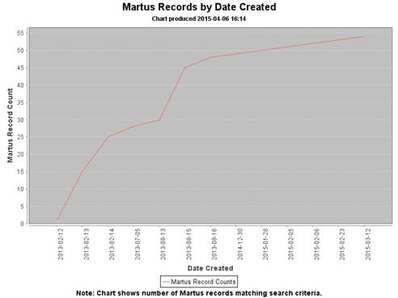
Important Note:
● Martus charts are intended to give you information about the status/progress of data that has been gathered and entered in Martus, but not to analyze “what happened” from the data that has been entered. So for example we can count the number of records that came from a particular time frame or region (if your project is collection that information), but not how many killings there were in a particular region.
● Martus charts are also meant to focus on fields in which the information is distinct for a record or source document. For example, you can design reports to search for all records entered by a certain user, or given by individuals of a given ethnicity (if your project is collecting that information).
● Martus charts do not correct for the following:
o Sampling bias (e.g. all records entered being more from one particular region than any others, even if the project is covering incidents that happened across all of them).
o Duplicate reporting (i.e. more than one record may exist about the same incident, or the same person may be mentioned using different names, or there may be multiple people with the same name).
o Data quality issues (e.g. typos that might lead to a search not finding records, fields being left blank where values were expected). Some of these issues can be addressed in a project customization, by requiring certain fields to be entered before a record or grid row can be saved, or using dropdown fields to avoid typos and guarantee consistency in searching.
o Possible inconsistency in how data is entered in Martus by different people. For more on this topic, see “Controlled Vocabulary” and the “Inter-rater Reliability” section on https://hrdag.martus.org/resources/core_concepts.shtml.
● Martus charts especially should not attempt to count the number of violations, victims or perpetrators, beyond counting the number of records that match search criteria. Before counting violations or victims/perpetrators, important data processing needs to take place before such counting can be considered scientifically defensible. This includes addressing the possibility of duplicate reporting (more than one record may exist about the same incident); representing the complexity of human rights violations (an individual who was the victim of a given act may later become the perpetrator of a different act, or vice versa); and maintaining consistency in meaning and counting (ensuring, for example, making sure that all the data entered in records used consistent definitions for violations.)
● If you would like to perform descriptive or qualitative analysis of the information entered into Martus, Benetech can help you to use a tool to export and summarize data for your project. The exported data may be able to be reviewed using analytical tools, but please keep in mind that quantitative or inferential statistical analysis cannot be performed until additional steps have been taken in processing the data, and without enough volume and different sources of data, statistical analysis may not give meaningful or reliable results.
7. Delete Martus, Your Records, and Account Information
7a. Delete Your Account and Locally Stored Records
1. Close all other applications on your computer.
Note: You can delete records and Martus folders while other applications are open, but Martus may not be able to remove all Martus folders if other applications are open during the process.
2. Select Account > Delete Account.
3. Martus will prompt you to confirm deletion. Select OK to confirm that you want to delete all your records and your account information, including your key file, from your computer. If you do not wish to continue, select Cancel.
4. Martus automatically closes.
What will be deleted?
● Records that have not been sent to the server or otherwise backed up.
● Your account key file. If you delete your key without backing it up, you will lose access to all private data you’ve sent to the server; such data would be available only to Contact accounts authorized to view your data that were created before the records were saved and sent to a server.
● Server settings, Contact accounts, default details values, custom fields, user-created folders in Martus, and interface preferences (e.g., date format, column widths).
What will not be deleted?
● The Martus application.
● Any records or account files that were copied or moved to folders outside the Martus folder, such as the desktop.
● Records or account information on any other computers where you set up your account.
● Records on a Martus server.
7b. Remove/Uninstall the Martus Application
Windows
● Select Start > Programs > Martus > Uninstall Martus; or
● Select the uninst.exe file in the Martus\bin directory; or
● Use the Add/Remove Programs control panel:
1. Select Start > Settings > Control Panel.
2. Choose the Add/Remove Programs icon.
3. Select Martus from the list of applications.
4. Select Add/Remove, and follow the on-screen instructions.
Mac OS
Delete the Martus.app file from the location where it was installed.
Note: If you copied the Martus application (Martus.app) to your Applications folder or your Desktop (or elsewhere on your computer), it will not be removed when you uninstall Martus, which may be a security concern.
Linux
To uninstall Martus in Linux (or if you installed using an ISO file in Mac OS) without deleting your Martus records or account data, delete the martus.jar and the ThirdParty directory.
8. Keeping Your Data Secure
Martus has been designed with security in mind. Understanding how its security features work can help you keep your records secure, while ensuring that you can continue to access them.
8a. Back up your key
To ensure that you’ll always have access to your data, it is extremely important to keep a backup of your key. Martus offers two methods for backing up your key, either of which may be used, but we strongly recommend using both backup methods. The first method creates a single, password encrypted key backup file onto removable media (e.g. CD, USB storage) or a network drive; the second method backs up the key in three separate pieces (not encrypted with your password) onto multiple removable media.
Backup a Password Encrypted Key
1. Insert a blank disk into your removable media drive.
2. Choose Account > Key Backup.
3. Select Export Password Protected Key.
4. In the Backup Key File dialog box, navigate to your removable media device (e.g., USB or CD), or your network drive.
5. Give the backup key file a unique name, especially if more than one account is used on the computer. By default, Martus names the file MartusKeyPair.dat. You may choose to add a number or code word to the file, such as MartusKeyPair222.dat.
6. Select Save. Martus copies the backup key file to the location you specified.
7. Select OK to exit.
Important Note: Store your backup disk or other removable media in a secure place where it is unlikely to be damaged by weather, insects, or other factors. Do not write your password on the disk or store it on the disk electronically. No one can use the key you back up to a single file without your username and password.
Backup an Unencrypted Multi-Part Key
Next, to back up your key file to three removable media (two of which will be required to restore the key file):
1. Insert a blank disk into your removable media drive.
2. Choose Account > Key Backup.
3. Select Export Multi-Part Key. Read the informational screen and click Continue.
4. Click Yes to create an additional set of backup files on three separate removable disks.
5. Read the informational screen and click Continue.
6. Name the file and click OK.
Tip: Give the file a unique name that you will remember later, and that can be distinguished from other accounts’ backup files. Each of the three files will have the same name, with a sequence number appended. For example, if you name the file kpbackup, the files will be saved as kpbackup-1.dat, kpbackup-2.dat, and so on.
7. Navigate to your removable media drive in the Saving Backup Disk dialog box, and click Save. You must use a removable media drive (e.g. CD, USB storage) instead of your hard drive, because the program will not save two of your backup files to the same place.
Note: If Martus gives you an error when using a USB drive, see section “10. Frequently Asked Questions”.
8. Insert disks or other removable media as prompted, clicking OK each time to proceed to the next disk.
9. To ensure that the data has been written properly, click Yes in the Verify Disks dialog box.
10. If Martus was able to verify the data on all the disks, click OK in the Verification Succeeded dialog box. If there were problems with one or more disks, repeat the backup process with different disks.
11. Read the information in the Backup Complete dialog box, and click OK.
8b. Restore your key
If you have lost your computer, had a hard drive failure, or lost your key for some other reason, restore your key using your backup copy. If you know your username and password and have a single file key backup, we recommend you use that file as it is more secure. However if you have forgotten your password, you will need to restore your key from multiple disks.
Restore Your Account Key from a Password Protected Key File:
1. Start Martus.
2. Select the Restore Account tab in the Martus Signin dialog box.
3. Select Restore account from backup key file.
4. Read the informational dialog box, and click OK.
5. Find the file on your hard-disk/network-drive or insert the floppy disk (or other removable media) that contains the file and navigate to it, and click OK.
6. Log into Martus using the username and password that were associated with the key at the time you created the backup file.
7. You will then be asked to create a password encrypted backup file of your key with this username and password.
Note: If Martus gives you an error when using a USB drive, see section “10. Frequently Asked Questions.”
Restore Your Account Key from a Multiple Disks:
1. Start Martus.
2. Select the Restore Account tab in the Martus Signin dialog box.
3. Select Restore account from multiple disks.
4. Read the informational dialog box, and click OK.
5. Insert the first disk and navigate to the file it contains; click OK; and then insert the second disk and click OK.
6. Either use your old username and password or create a new username and password for your account.
7. You
will then be asked to create a password encrypted backup file of your key with
this username and password. See "8a. Back up your key8a.
Backing up your key" for more details.
8. After the restoration is complete, be sure to re-distribute the key backup disks. Any time two of those disks are in the same place, anyone could use them to access your account, even without knowing your username or password.
Note: If Martus gives you an error when using a USB drive, see section “10. Frequently Asked Questions.”
8c. Using your password wisely
It is critical that your password remain secret. Do not share your password with anyone, and do not use a password that someone could easily guess.
Each time you change your
password, back up your key and delete all previous single file backups (you do
not need to, and should not, delete any multiple file backups you created since
they are not encrypted with your password). Your new backup key file is encoded
using your new password. See “8f. Change your username or password8f.
Changing your username or password” for more information.
When Martus is running, it will prompt you to re-enter your username and password after five minutes of inactivity. This is to minimize the chance that other people will be able to access your private data if you leave Martus open while you are away from your computer. If Martus prompts you for your username and password while you are editing a record, and you click Cancel, changes you've made to the record are lost and it reverts to its last-saved state. If you haven’t ever saved that record, the entire record is lost. We suggest you save any records you’re working on and then exit Martus before you leave your system unattended.
8d. Using safe computing practices
If you are concerned about the security and reliability of Martus, you also need to be vigilant about protecting all other software that runs on your computer, including your operating system (such as Microsoft Windows, Mac, Linux). If attackers are able to find any security holes in your operating system, they may be able to view your private data, or to create records that will appear to have been written by you.
It can require a lot of effort to thoroughly protect a computer that is connected to the Internet. But even a small amount of effort can preserve the integrity of your computer against many of the most common intrusions.
▪ Install virus protection software and subscribe to a virus definitions update service to protect your system from viruses and worms.
▪ If running under Windows, regularly check for and install critical product updates from Microsoft to preserve the integrity of your operating system.
▪ We also recommend that you install and regularly update spyware (also known as "malware" or "adware") protection software.
To increase the security of Martus on your computer (in case your computer falls into the wrong hands), there is an extra precaution you can take if you are running Windows. The feature erases the Windows virtual-memory swap-file (also known as a pagefile) when you shut down your computer. This file contains temporary snapshots of certain portions of data that were used by any programs while you were working. Enable this feature, and your pagefile will be erased when you shut down your computer. It may add a little time to the shutdown process.
▪ For Windows 7 and 8 run regedit and set this registry entry to 1: HKEY_LOCAL_MACHINE\SYSTEM\CurrentControlSet\Control\Session Manager\Memory Management\ClearPageFileAtShutdown
Note: If this registry value does not exist, add the following value:
Value Name: ClearPageFileAtShutdown
ValueType: REG_DWORD
Value: 1
Note: As described elsewhere in this User Guide, Martus allows you to attach files to records. On most operating systems, when attachments are opened they are automatically saved in a ‘temporary’ directory, which is unencrypted. For information about the security precaution known as attachment ‘shredding,’ please see section “10. Frequently Asked Questions.”
8e. Sharing your data with Contacts
Your colleagues may want to access the records you create, and the records created by other members of your organization. Your colleagues — or anyone else you want to share your data with (e.g. an editor who wants to review the work of a journalist, or even a colleague in your same office) — can create a Martus account and be added as one of your account’s Contacts, which will permit them to view your records, including the private data in them, only if you give them permission. They will not be able to create records using your account. This access can provide several advantages: it gives the Contact accounts more information, and it ensures that someone will be able to access your private record data even if you lose your key file or forget your password. You can share records with multiple Contact accounts, which can be useful if you would like to send different records to different Contact accounts, or if there are additional people inside or outside your organization who you want to review your records.
There are many different possible configurations that may fit needs of your organization. See some examples below:
All the data in each record that you save will be viewable by any Contact accounts you have added. This allows you to designate which Contact accounts are allowed to view each record.
As soon as a record has been shared with a Contact, the information in that record will be available to that Contact. Removing that Contact later will not prevent that Contact from viewing the data that was saved when they were configured as your Contact, but it will prevent them from viewing any the data in any records (or new versions of records) you create after they were removed.
To access Contact records, you and your Contact must first share account information (Access Token, Public Code etc.)
Note: Only records saved after you setup your Contacts will be available to those Contacts. If you created a record without adding a particular Contact, you can create a new version of the record with the Contact added so they can view the content.
Add and Verify Contacts
To add Contacts to your Martus account:
1. Select Account > Manage Contacts.
2. Select the Manage Contacts button
3. Either:
a. Add a Contact by pulling its Martus Public Account ID from the Martus server: Input the Contact’s Martus Account Access Token in the Access Token field and select Add Contact…; or
b. Add a Contact from a Martus Public Information (.mpi) file: Select Import Contact from File… and choose the (.mpi) file given to you by your Contact.
4. Verify the Contact by reviewing the Public Code associated with the Contact’s Access Token and select Verify Now
a. If you select Verify Later, you can verify the Contact at another time by selecting Verify Now from the Verified column in the Manage Contacts window.
Note: We recommend that, whenever possible, you “verify” your Contacts to ensure that the data is being sent to or from someone you know. This is especially important when opening attachments inside records to avoid malware or other potentially dangerous content. When you view a record from a Contact that has not yet been verified, Martus will show the following warning:
5. Enter a Contact Name for the Contact. Use a label that is meaningful to you, as you may not always remember the account's public code. The Contact label might be the name of the person or organization, or the name of a city or region, for example. You can change the label later if you want to. Only you will see the label you assign; others who view the record will not see the label, for security reasons.
6. Select Save and Close.
Share your account information with another Martus account
To share your Access Token and Public Code (used to add and verify you as a Contact):
1. Select Account > Account Information.
2. Give the Access Token to the Martus user who will add you as a Contact.
3. Communicate your Public Code through a secure communications channel in order to be verified once added as a Contact.
4. Note: Be sure to securely communicate access tokens and public codes using a method such as encrypted email, Off-the-record (OTR) chat, face to face, or another communication channel where nobody can intercept your information.
To share your Martus Public Information (.mpi) file (used to add a Contact):
1. Select Account > Account Information.
2. Select Export My Public Account ID, and name the file. Martus saves the file with a .mpi extension in your account directory in the Martus folder on your hard drive by default (though you can also save it elsewhere on your computer if desired), and confirms that it has been saved.
3. Give the .mpi file to the Martus account holder who wants to add you as a Contact. If you can’t find your .mpi file on a Mac, see “10. Frequently Asked Questions.”
Share records with your Contacts
To share a record individually with a Contact:
1. Choose to Create or Edit a record and input any data.
2. Select the Add Contacts icon.
3. Select the box(es) next to the Contact(s) with whom you would like to share the record
4. Select OK.
5. Select Share to save the record.
To share all new records with a Contact by default:
1. Select Account > Manage Contacts.
2. Select the Manage Contacts button.
3. Check the Send to by Default box for the desired Contact.
Note: You can still deny access to individual records as you create them.
4. Select Save and Close.
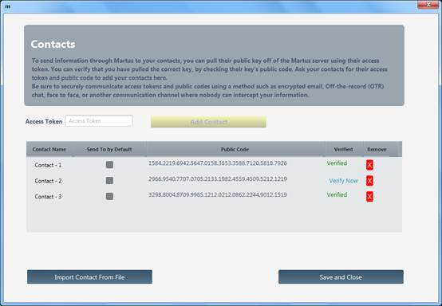
Deny a Contact access to your records
Contacts will continue to have access to any records or record versions you saved while permission was given to their accounts. However, they will not have permission to view any future records or new record versions you save once you deny them access.
To deny access to individual records:
1. Select the record that you would like to update and select Edit.
2. Select the Add Contact.
3. Uncheck any Contacts that you would no longer like to share the record with.
4. Save, Version or Share the record.
To remove a Contact (prevents access to all new records or new record versions)):
1. Select Account > Manage Contacts.
2. Select the Manage Contacts button.
3. Select the X in the Remove column for the Contact you wish to remove.
4. Select Yes to confirm removal in the Remove Contact dialog box.
5. Select Save and Close.
8f. Change your username or password
At regular intervals and if ever you feel your account has been compromised you should change your password and/or username.
1. Select Account > Account Information.
2. Select Change Username and Password.
3. Enter your current username and password on the Validate User screen.
4. Enter
your new name and password on the next screen. You can change either or both
fields. See “2e. Create an account2e.
Creating an account” for guidelines on username and password
creation. Hit OK to accept, or Cancel to keep old username and
password.
5. Repeat the new username and password entry on the Confirm Password screen
6. You will then be prompted to back up your key with the new username and password.
9. Customize Martus
You can customize certain aspects of your records to save time, provide consistency, and ensure that specific questions are addressed in every record. You can create additional record fields. The customized fields appear in every new record you create; they have no effect on existing records.
9a. Use Templates
Martus provides the ability for an account holder to export customization templates or send them to a server to share with other Martus users. Users can then import customization settings from a choice of templates. This allows users to use different custom record formats for different types of data sets.
Import Templates from the Server
1. Select the Template Manager icon in the Martus sidebar.
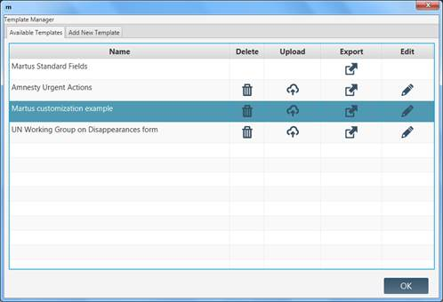
2. Select Add New Template.
3. Select Generic to import generic Martus form templates; or
Select From Another Martus User to import forms from a Contact or another Martus User.
a. Download from my Contacts allows you to choose an existing Contact from whom you would like to import form templates.
b. Download from Another Martus User allows you import form templates from a Martus account that you have not added as a Contact (e.g. a trainer) by inputting that account’s Access Token.
4. Select Add to add the selected template to your list of Available Templates.
5. Select the Edit icon to optionally modify the template Title and Description. Select OK.
6. Select OK to exit.
Import Templates from a File
1. Select the Template Manager icon in the Martus sidebar.
2. Select Add New Template.
3. Click Import Template.
4. Select the file exported by you or another Martus account.
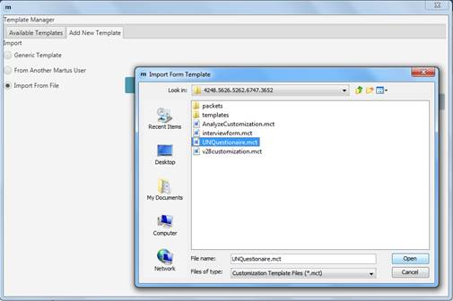
Note: If you try to import a template created by an account that is not one of your Contact accounts (or your current account), Martus will warn you before you load the template.
5. Click OK in the confirmation dialog box.
6. Select Add to add the selected template to your list of Available Templates.
7. Select the Edit icon to optionally modify the template Title and Description. Select OK.
8. Select OK to exit.
Upload Templates to a Server
1. Select the Template Manager icon in the Martus sidebar.
2. Select the Upload icon for the template you wish to send to the server.
3. Read the Send Template to Server dialog box. If you want to proceed, click Yes.
4. Select the Edit icon to optionally modify the template Title and Description. Select OK.
5. Select OK to exit.
Export Templates
1. Select the Template Manager icon in the Martus sidebar.
2. Choose the Export icon for the template you wish to export.
3. Enter a name for the template file. Martus saves the file with a .mct (Martus Customization Template) or .xml extension in your account directory in the Martus folder on your hard drive, and confirms that it has been saved. You can also save the file to another location if desired.
4. Select OK to exit.
Note: If you are using multiple templates, we recommend choosing descriptive filenames for each template.
5. If you want to share the customization template with a Contact or other Martus account, give them your .mct file.
Note: Templates can be imported during account creation or in the Template Manager by any Martus account holder to whom you have given your Martus Account Access Token or the exported *.mct file.
9b. Customize your record display
There are various alternate display options for records:
● To hide entire sections while editing or viewing a record: select the section label of the section you wish to hide. To unhide the section again to see its contents, select the section label again. Martus will display all records with matching sections the same way, until you exit Martus.
● You can add another “item” to the multi-item list by hitting the Add Item button.
Note: If you have a lot of your record data in multi-item lists, and especially if you have a lot of records, doing data entry and viewing/displaying the multi-item lists can make Martus perform more slowly.
9c. Customize record fields
Most Martus users find that the default record fields meet their needs. However, some groups find it useful to customize their records to capture specific information such as the source of the record data, the names of witnesses, the country in which the incident occurred, or a table of information about victims. Additionally, you may find it easier to import custom fields into other applications for reporting and analysis. You can customize the records you create by rearranging the fields, adding fields, or removing fields you don’t need. You can create several kinds of custom fields, including Yes/No, date, date range, drop-down lists, grid (table), language, messages (notes), single line text, and multi-line text fields.
Create or Update a Template
1. Export the Martus Standard Fields template as an XML file if you are creating a new template; or
Export the template which you would like to update as an XML file.
2. Open the template in an XML editor.
3. The layout of the fields in a record is dictated by an XML document. The document must begin with <FormTemplate><Title>Template Title</Title><CustomFields> and end with </CustomFields></FormTemplate>.
Note: If you are working from the Martus Standard Fields template, you must add <Title </Title> yourself.
4. You can add and remove any fields in the template aside from the 'author', 'entrydate', 'language', and 'title' fields.
· To re-order fields, cut and paste them into the order you want them to appear.
· To add a field, click an insertion point where you want the field to appear. Enter the type of field you want to use: BOOLEAN, DATE, DATERANGE, DROPDOWN, GRID, LANGUAGE, MESSAGE, MULTILINE, SECTION or STRING. Each field must have a unique tag, which can be any single word except those already used by the system, in any language, and cannot contain spaces, special characters, or punctuation. For example, you could use 'VictimsName' or 'EyeColorChoice'. Each field should be given a label, which is what will appear next to the field in the record; it can contain any characters in any language except certain special characters (e.g., < and > which are used by the system). For example, you might use 'Name of 1st Witness.' See the examples below.
· To remove a field, delete the field definition text (type, tag, label) for the field you want to remove. You cannot remove certain required fields, including the author, title, language, and entry date.
· You can create sections (which you can hide/unhide) in your records using a SECTION field type. Sections can include as many individual fields as you like.
· You can require certain fields or grid columns to be entered before saving a record by using <RequiredField/> in the field definition.
· You can restrict date fields, date grid columns, date range fields, and date range grid columns by using <MinimumDate> and/or <MaximumDate> tags with a date in YYYY-MM-DD format. A blank date (shown as <MaximumDate></MaximumDate> or <MaximumDate/>) means 'today', although it may allow one day earlier or later, due to time zone issues. Please note that you can require date validation of standard fields as well as custom fields. Date field Year dropdown choices will reflect the hard-coded date ranges specified in the customization. Note: The year format in the customization must always be a 'Gregorian' year like 2009, even if Martus is configured to use Thai or Persian dates.
· You can populate drop-down lists (either inside or outside of a multi-item list) in 3 ways - 1) by entering a list of <Choices> values in the field definition, 2) with values that have been entered in a multi-item list elsewhere in your record by using <DataSource> (sometimes called “data-driven dropdowns”), and 3) by creating lists of "Reusable Choices" that can be referred to by more than one field. See examples below for the correct XML definition syntax to use. Please note that in this release, Martus will not include data-driven dropdown fields in the Search screen.
· You can set a default value for text and dropdown list fields by using <DefaultValue>ddd</DefaultValue>, where “ddd” is the value you choose. For dropdowns, you must use a value already in the list of choices you defined. For Reusable Choices dropdowns it can be a partial or complete code, with each level separated by dots (for a location dropdown that has both Region and City levels, you could pick the default to be at either level, e.g. either R1 or R1.C1, see example below). Default values can be set for both standard and custom fields, but are NOT allowed for BOOLEAN, DATE, DATERANGE, GRID, LANGUAGE, MESSAGE, and SECTION field types, and are not allowed for dropdowns where the values in the list are based on data entered in another field (i.e. data-driven dropdowns).
5. When you are finished editing your template, save it as an XML file.
6. Import the template into Martus to use it.
Keep the following in mind when you're customizing fields:
1. XML is case-sensitive. (For example, "Witness" is not the same as "witness.")
2. You can use either single or double quotes around the field type name, as long as they match. (e.g. 'STRING" is not valid. It needs to be 'STRING' or "STRING")
3. A BOOLEAN field will appear as a checkbox when you are editing a record, and will be displayed as Yes/No in record previews and when printed.
4. Both STRING and MULTILINE fields are text fields. STRING fields will expand to fit the size of the text you enter, while MULTILINE fields have a scrollbar so that the field doesn’t exceed its original height.
5. Use MESSAGE fields to give guidance on how to enter data, and to create comments/notes that will be displayed in every record.
6. When you're entering data into a multi-item list, select Add Item to add more data, press Tab to advance to the next cell, and double-click to copy and paste text.
7. A GRID can contain columns of various types: BOOLEAN, DATE, DATERANGE, DROPDOWN, and STRING.
8.
You may need to
provide guidance to other users by giving them a customization template. To
minimize the need for further instruction, use labels that clearly identify the
content (such as "Name of Victim"). For more information on
exporting customization templates, see section “9a.
Use Templates9a. Use Templates.”
9. Please make sure to change your field tags if you change the field label or field type when you edit your customizations, because using the same tag for different labels can cause confusion when searching or reporting on those fields. The only case in which you can keep the same tag when changing a label is if you really want the different labels to be counted as exactly the same (e.g. you are just fixing typos in the labels).
10. Please note that default values are only applied when a new record is created, not when a new version of a record is created, so that the value of the field in the previous version is not overwritten. This means that default values entered in a record using an earlier customization will be kept even if you create a new version of the record with an updated customization that has a new default value.
Special Notes on “Reusable Choices” (multi-level, nested) dropdown lists
1. Dropdowns using a "Reusable Choices" list can have multiple levels (e.g. for locations that might have Region and City), different fields can use one or more of the levels (e.g. if you have defined Region and City levels, you could have a field that just uses the Region level, and another field that uses both levels), and you do not need to define all levels for all entries (e.g. you could have defined Neighborhood values as a lower level for some larger Cities, but not all Cities need to have Neighborhoods defined). The number of levels is not limited by Martus, but please note that if you have large amounts of data in your definitions lists, or a large number of levels, performance of certain Martus record operations may be affected.
2. In this release, we recommend that if you want to change the number of levels in a “Reusable Choices” dropdown field when updating a customization, you also change the field tag and/or label so that they are more easily distinguished from each other in searching and reporting. If you do not, the search/report results may be confusing since fields with the same label/tag will be treated differently due to them having a different number of levels.
3. “Reusable Choices” codes have the same restrictions that field tags do; they can be in any language, but cannot contain spaces, special characters, or punctuation.
4. Please make sure to not use the same codes in “Reusable Choices” lists if you edit your customizations unless you are just fixing typos in the labels, because using the same code for different labels can cause confusion when searching or reporting on those fields. Ideally you should use codes that are not numeric, but are letters that are a meaningful abbreviation of the label so there is no confusion over what they stand for if you update the customization at a later date (e.g. use 2 or 3 letter abbreviations for locations instead of numbers).
5. You cannot use a multiple level / “Reusable Choices” dropdown as a data source for another dropdown inside or outside of multi-item lists. If you try to do this you will see an error message.
6. Please note that when you save customization XML with a “Reusable Choices” list for dropdown fields, Martus will move those choice definitions to the bottom of the XML when you reload it.
7. Martus doesn't automatically insert a blank entry for Reusable Choices dropdown lists the way it does for other dropdowns. If you want to be able to select “blank” for the top level of a Reusable Choices dropdown (or a single level Reusable dropdown), you need to explicitly add a blank entry in your customization XML (by adding “<Choice code='' label=''></Choice>” to the top level ONLY of the Reusable Choices list). If you do not do this, and have not specified a default value (which will mean you will never see blank as an option), the dropdown list will start with the blank entry, but once you pick another value, you will not be able to go back to the blank option.
Here are some examples; these fields would look like the ones in the figure that follows:
<Field type='SECTION'>
<Tag>SourceSection</Tag>
<Label>Source Section</Label>
</Field>
<Field type='STRING'>
<Tag>office</Tag>
<Label>Regional office collecting the data</Label>
<DefaultValue>Region 3 field office</DefaultValue>
</Field>
<Field type='DROPDOWN'>
<Tag>RecordSource</Tag>
<Label>Source of record information</Label>
<RequiredField/>
<Choices>
<Choice>Media/Press</Choice>
<Choice>Legal Report</Choice>
<Choice>Personal Interview</Choice>
<Choice>Other</Choice>
</Choices>
<DefaultValue>Media/Press</DefaultValue>
</Field>
<Field type='STRING'>
<Tag>SpecifyOther</Tag>
<Label>If Source = "Other", please specify</Label>
</Field>
<Field type='STRING'>
<Tag>IntervieweeName</Tag>
<Label>Interviewee Name</Label>
</Field>
<Field type='LANGUAGE'>
<Tag>IntervieweeLanguage</Tag>
<Label>Interviewee Speaks</Label>
</Field>
<Field type='DATERANGE'>
<Tag>InterviewDates</Tag>
<Label>Date(s) of interview(s)</Label>
</Field>
<Field type='BOOLEAN'>
<Tag>Anonymous</Tag>
<Label>Does interviewee wish to remain anonymous?</Label>
</Field>
<Field type='BOOLEAN'>
<Tag>AdditionalInfo</Tag>
<Label>Is interviewee willing to give additional information if needed?</Label>
</Field>
<Field type='BOOLEAN'>
<Tag>Testify</Tag>
<Label>Is interviewee willing to testify?</Label>
</Field>
<Field type='DROPDOWN'>
<Tag>EventLocation</Tag>
<Label>Event Location</Label>
<UseReusableChoices code='RegionChoices'></UseReusableChoices>
<UseReusableChoices code='CityChoices'></UseReusableChoices>
<DefaultValue>R1</DefaultValue>
</Field>
<Field type='SECTION'>
<Tag>PeopleSection</Tag>
<Label>People Section</Label>
</Field>
<Field type='GRID'>
<Tag>VictimInformationGrid</Tag>
<Label>Victim Information</Label>
<GridSpecDetails>
<Column type='STRING'><Tag></Tag><Label>First Name</Label></Column>
<Column type='STRING'><Tag></Tag><Label>Last Name</Label></Column>
<Column type='BOOLEAN'><Tag></Tag><Label>Is Identified?</Label></Column>
<Column type='DATE'><Tag></Tag><Label>Date of Birth</Label>
<MinimumDate>1910-01-01</MinimumDate><MaximumDate/></Column>
<Column type='DROPDOWN'><Tag></Tag><Label>Sex</Label>
<RequiredField/>
<Choices>
<Choice>Male</Choice>
<Choice>Female</Choice>
<Choice>Unknown</Choice>
</Choices>
</Column>
<Column type='DROPDOWN'><Tag></Tag><Label>Region of Birth</Label>
<UseReusableChoices code='RegionChoices'></UseReusableChoices></Column>
<Column type='STRING'><Tag></Tag><Label>Ethnicity</Label></Column>
</GridSpecDetails>
</Field>
<Field type='MESSAGE'>
<Tag>MessageProfession</Tag>
<Label>Profession History Table Note</Label>
<Message>If you have information about a person who has had different professions over time, enter multiple rows with the same First and Last Names and show the date ranges for each profession on a separate row.</Message>
</Field>
<Field type='GRID'>
<Tag>ProfessionHistoryGrid</Tag>
<Label>Profession History</Label>
<GridSpecDetails>
<Column type='DROPDOWN'><Tag></Tag><Label>First Name</Label>
<DataSource>
<GridFieldTag>VictimInformationGrid</GridFieldTag>
<GridColumnLabel>First Name</GridColumnLabel>
</DataSource>
</Column>
<Column type='DROPDOWN'><Tag></Tag><Label>Last Name</Label>
<DataSource>
<GridFieldTag>VictimInformationGrid</GridFieldTag>
<GridColumnLabel>Last Name</GridColumnLabel>
</DataSource>
</Column>
<Column type='STRING'><Tag></Tag><Label>Profession</Label></Column>
<Column type='DATERANGE'><Tag></Tag><Label>Dates of Profession</Label><MaximumDate/></Column>
</GridSpecDetails>
</Field>
<Field type='MULTILINE'>
<Tag>narrative</Tag>
<Label>Narrative description of events</Label>
<DefaultValue>What happened in detail is as follows:</DefaultValue>
</Field>
<ReusableChoices code='RegionChoices' label='Region'>
<Choice code='R1' label='Region 1'></Choice>
<Choice code='R2' label='Region 2'></Choice>
<Choice code='R3' label='Region 3'></Choice>
</ReusableChoices>
<ReusableChoices code='CityChoices' label='City'>
<Choice code='R1.C1' label='City 1'></Choice>
<Choice code='R1.C2' label='City 2'></Choice>
<Choice code='R2.C3' label='City 3'></Choice>
<Choice code='R2.C4' label='City 4'></Choice>
<Choice code='R3.C5' label='City 5'></Choice>
<Choice code='R3.C6' label='City 6'></Choice>
</ReusableChoices>
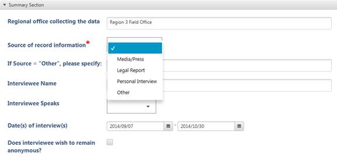
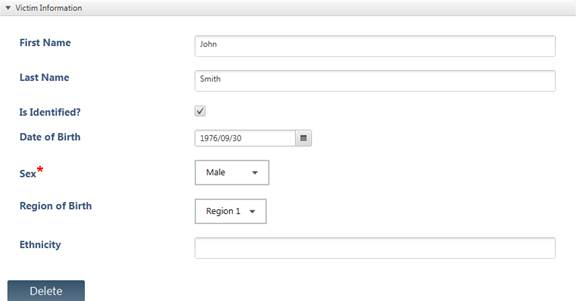
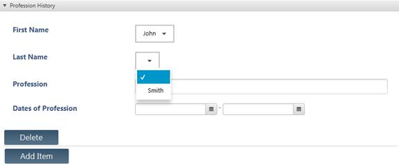
Note: If you receive an error when in import your template, you must correct the problem before you can proceed. If you are not sure what caused the error check the following:
· Ensure that the author, language, entrydate, and title fields are present.
· Remove any labels you created for standard field tags.
· Remove any tags that are repeated.
· Ensure that each custom field you created has a corresponding label.
· Make sure that all text in brackets and quotes has both a start and end bracket/quote.
· Ensure that the customization starts with <FormatTemplate><CustomFields> and ends with </CustomFields></FormatTemplate>.
Note: You can update your customization if the information you are collecting over time changes, for example by adding new fields. If you are changing fields in a customization, you should think about how you will want to search/report on records created with the old customization as well as new records you create with the new customization, and try to make the changes so that you can search/report on all records at the same time. Changing field types may cause your searching/reporting to be more complex, so we always recommend that you test out creating records with a new customization and searching/reporting on both old and new records before officially updating the customization for your project.
10. Frequently Asked Questions
1. I’ve saved a record, but the check mark hasn't appeared in the On Server column.
Ensure you have an active Internet connection, and that you’ve set up a server. Records are not listed as On Server until they have been successfully sent to the server. Records may also take up to an hour to send if you are sending a large attachment, or if the connection is slow. While Martus is sending the record, it displays a progress meter in the status bar at the bottom of the screen. Additionally, when you connect to a server, there may be a delay before the On Server column is populated.
2. Martus won’t accept my password.
Make sure you’re entering the correct username and password, especially if you changed the password recently. Your username and password are case-sensitive. Make sure you’re entering capital letters, as well as spaces and punctuation, exactly as you entered them when you created the username and password. Each time you enter an incorrect username or password, the system delays for a longer period before displaying the Martus SignIn dialog box again. Since Martus does not store your password anywhere, and it uses strong encryption, there is no way to get access to your account without your username and password unless you have performed a multi-file key backup.
3. I want to use Martus on a co-worker’s computer, but it won’t accept my username/password.
You can access Martus only on a computer that contains your key file. Your username and password activate your key, which may not be present on your co-worker’s computer. There can be multiple accounts on a single computer, but your key must be available on that computer for you to access it. To access your account on your co-worker’s computer, click the Restore Account tab in the Martus SignIn dialog box, and then use your backup key file to create the account. And, though you can install your key on more than one computer at a time, remember that you need to update each key if you change your password, and that your data is only as secure as the least secure computer on which you have your account.
4. The records in my account on a co-worker’s computer do not match those on my computer.
If you have set up your account on multiple computers, you can’t access your records from a different computer unless they were saved to the server and downloaded to the current computer. If you overwrite a record on the server from one computer, the version on the server will not match the version on the other computer because the server saves the last version of the record. To download the most recent record version from the backup server, you will need to delete any older versions from your computer. If you want to keep a backup copy of the older record, you can export the record before deleting it. If you delete a record from one computer and from the server, it will still be on the other computer. On that other computer, if you modify the record, it will re-upload it to the server, but if you never modify the record, it will never get re-upload.
5. I’ve versioned record, but I need to make a few changes to it.
Once you’ve versioned a
record—whether or not you've sent it to the server, neither you nor anyone else
can ever edit the original record again. However, if you have information to
add to a versioned record, or need to make an important correction, you can
create a new version of the record (see "5b. Version a record5b.
Versioning a record") and send it to a server. Both the
original version and the new version will then be available on your computer
and the server.
6. I deleted a record from the Trash, but it still appears in another folder.
Delete the record from under all labels before emptying the Trash.
7. Can I backup my Martus data onto an external hard drive or other removable media?
Yes, if you have a backup device large enough to hold all your data (e.g. CD, USB etc.). Copy the entire Martus folder onto your backup media. This folder contains the Martus application, the Java runtime environment, encrypted key files, configuration data, and records for all Martus accounts on the computer. For a minimal backup, copy only the MartusKeyPair.dat file and the Packets and Accounts folders from your account directory.
8. Why are there more languages available when creating records than in the SignIn screen or Options dialog box?
The Options dialog box lets you choose a language for the Martus software user interface. Martus has been translated into several languages. Visit https://www.martus.org to see which languages are currently available, including any language packs that have been added since the latest Martus release. If you are interested in translating Martus into another language, please contact us at martus@benetech.org.
As you noticed, there are several languages available in the Language drop-down list when you create a record. That option specifies the language you use to enter the data into your record. You do not need to type the record in the same language used in your user interface.
9. Why does Martus seem slow when I’m doing some tasks?
Some suggestions for dealing with slow performance are below:
a) Martus will manipulate records (e.g., sorting, copying/pasting) more efficiently if they are not all in one folder. Consider using separate folders for records from different weeks, by different authors, or related to different topics. Additionally, select a folder with few records before exiting Martus. When you start Martus, it opens the last folder you viewed; if there are fewer records in that folder, Martus will start more quickly.
b) If you have a lot of your record data in multi-item lists, and especially if you have a lot of records, doing data entry and viewing/displaying the record multi-item lists make Martus perform more slowly. If you are noticing slowness, try setting any grids in expanded view back to grid view.
c) Martus may also seem slow (especially when retrieving records, or performing other complex tasks) if your computer doesn't have enough memory allocated to Martus. If memory is the issue, the console log typically returns the error “Out of Memory.”
To resolve memory issues in Windows, change the command line in the desktop shortcut (right-click, and choose Properties) to the following:
C:\Martus\bin\java.exe -Xms512m -Xmx1024m -jar C:\Martus\martus.jar
Save by hitting OK, and then double-click the updated shortcut to start Martus.
To resolve memory issues in Mac (if installed with a DMG), do the following:
● Right-click on the Martus icon (.app file), pick “Show Package Contents”, and double-click on Contents folder
● Right click on info.plist and pick Open With. If you see TextEdit on the list, pick it; otherwise select “Other” and the Applications folder will open and you can scroll down to select TextEdit. Hit Open.
● Towards the bottom, you should see something that looks like this:
<key>JVMOptions</key>
<array>
<string>-Xms256m</string>
<string>-Xmx512m</string>
● Change “-Xms256m” to “-Xms512m” and “-Xmx512m” to “-Xmx1024m” so that the whole thing now looks like this:
<key>JVMOptions</key>
<array>
<string>-Xms512m</string>
<string>-Xmx1024m</string>
● Close the file, saving the changes if asked. And Close the Contents folder.
● Make sure the console is running still, and then double-click on the Martus icon (.app file) to run Martus.
This will allow Martus to get more memory than it does by default when installed, and will also turn on logging so that if there is a problem we can tell what it might be. The values of the memory switches (512 and 1024) are suggestions, but the best value is dependent on your computer's setup, so you may be able to optimize this setting. For a more specific recommendation, send information about your computer (how much memory or RAM is installed, how much swap or page file space is available, etc.) to martus@benetech.org. In Windows, you can find this information by choosing Start > Programs > Accessories > System Tools > System Information. In Mac, go to the Apple menu > About this Mac > More info… > System report… > Hardware (this is the Hardware Overview). If the pagefile is small, you may want to try to increase it.
10. I don’t have a Martus shortcut on my desktop or in my Start menu. How can I start Martus?
Martus always installs a shortcut in your Martus directory, which you can use to start Martus. Or, use one of the following methods, depending on your operating system:
In Windows, open a DOS prompt, change to the Martus directory, and type:
C:\Martus\bin\javaw.exe -jar C:\Martus\martus.jar
to start Martus.
In Mac OS,
a) If the DMG you installed is still loaded/extracted on your machine, click on it (may show up under “Devices” in Finder), and then double-click on the Martus icon (.app) file.
b) If the DMG isn’t loaded, double-click on the DMG file, then follow the step above.
In Linux, start Martus from the command-shell line, by typing:
java -jar <Martus program directory>/martus.jar
See Linux portion of section “2. Getting Started” for examples.
11. The Martus main page is slow to appear.
Depending on your computer system, there may be a delay of several seconds between the time you sign in and the Martus main page and workspace appear. Exactly how long it takes depends on the speed of your computer.
12. When I start Martus, the screens are all gray with no text visible.
This may indicate a problem with your video driver. Try installing an updated video driver, which may be available from the manufacturer’s website. Alternatively, you may be able to fix the problem by reducing the graphics acceleration setting in your video driver. For additional assistance, email martus@benetech.org.
13. I’m seeing unexpected behavior in Martus. How can I find out what’s going on?
Below are instructions to open a "console log" that displays additional information as Martus runs. This information is helpful to us in diagnosing problems.
In Windows, to always run with the console log, right-click on the Martus icon on your desktop, select Properties, select the Shortcut tab, delete the "w" from “javaw.exe” in the Target command line, and click OK. You can also create a copy of the default Martus desktop shortcut and make that change so the console will run when clicking on it, but please note that if you do this, the copied shortcut will not be removed when uninstalling Martus, which may be a security concern.
Another option is, instead of starting Martus by double-clicking the Martus icon on your desktop, choose Run from the Start menu and type the following text to launch Martus:
C:\Martus\bin\java.exe -jar C:\Martus\martus.jar
Save by hitting OK, and then double-click the updated shortcut to start Martus.
Note the console log messages you receive as you work in Martus, and e-mail those to martus@benetech.org. To copy and paste the console messages into an email, please do the following:
● Right-click in the blue window title at the top of the console log window. From the menu which appears, select "Edit." (The "Edit" option is listed just below "Close" in the menu, so be careful not to accidentally close the console log window which will also cause Martus to exit.)
● From the subsequent menu, choose "Select all" - this will highlight all of the console log text in white.
● Then, hit "Enter" on the keyboard. This will copy the console log contents to the 'clipboard' of your computer.
● Paste this, using Ctrl-V or right-clicking and choosing "Paste", either directly into an email or into a file using a text editor that you attach to an email to martus@benetech.org.
To display additional information as Martus runs that will be helpful in diagnosing any problems in Mac OSX, you can open a Terminal window:
1. Right-click (cmd + click) the Martus.app file to bring up the popup context menu.
2. From the context menu select "Show Package Contents."
3. The finder will change views to display the "Contents" folder.
4. Navigate to Contents/MacOs.
5. Double click the "JavaAppLauncher"
This will cause a new terminal to start which will contain the console output.
As long as the terminal is running, and troubleshooting or logging information from Martus will appear there. You can copy and paste the text from the terminal into an email to martus@benetech.org.
In Linux, start Martus from the command-shell line, by typing
java -jar <Martus program directory>/martus.jar
See Linux portion of section “2. Getting Started” for examples.
Then note the error messages you receive as you work in Martus, and e-mail those to martus@benetech.org.
If the log doesn’t help us identify the problem, the issue may be caused by damaged fonts. Damaged fonts may prevent Martus from starting. To determine whether a damaged font is causing the problem, run Martus with the console log (see above), and check to see whether the word "font" appears in the console messages at all. If so, it is likely that damaged fonts are causing the problem. To fix this problem in Windows, copy all of the contents of C:\Windows\Fonts to a temporary location, then delete all of the contents from C:\Windows\Fonts. Then, copy all of the contents back into that folder from the temporary location. This process will reinstall all of the fonts and, in the process, detect any corrupt/damaged fonts. Once the damaged fonts have been identified, manually delete them from C:\Windows\Fonts.
For additional assistance, email martus@benetech.org
14. Is there any limit to the size of records or attachments I can send to the server, or to the number of records I can store there?
No, currently there are no limits for the amount of data, the number of records, or the size of attachments you can send to a Martus Server. However, it's possible that there may be limits on certain servers in the future. If you send very large attachments (e.g. video) to the server just be aware that it will take longer than sending smaller amounts of data.
15. Can I get the Martus User Guide in a different language?
Yes. In fact, you probably already have multiple versions on your computer. When you install Martus, all the language versions of the user guide and quick start guide that are currently available are installed in your Martus\Docs directory. They are also available at https://www.martus.org, and you can visit this site to see whether new language versions are available. Additionally, there may be language packs available at that same page on Martus web site. A language pack can contain updated versions of the Martus user interface translation, the User Guide, the Quick Start Guide, and the Readme file (which describes the updates between Martus releases) in a particular language.
16. I can't see all the text in drop-down lists in the Arabic version of Martus and/or Arabic text in the column headers is displaying left justified. How can I fix this?
When you run the Arabic version of Martus in Windows XP, text in drop-down lists and/or column headers may not align correctly. To see the text as expected, set Windows to display user interface elements in "Windows classic style." From the Start menu, choose Settings > Control Panel. Then, double-click Display. In the Display Properties dialog box, click the Appearance tab, and choose Windows Classic Style from the Windows And Buttons menu.
17. How can I make accents appear correctly when I open a Martus record or report in another application?
Web browsers or word-processing applications may not display accents correctly in records or report files that you save from Martus. To ensure that accents appear, specify UTF-8 (Unicode) font/character encoding. If you do not know how to do this in the application, please email martus@benetech.org for assistance.
18. I’m having problems connecting to the server. What should I do?
If Martus reports that the server isn’t available or that you can’t connect, first try to “ping” the server (which tells you what your connectivity is like to this server). To ping the server, open a command prompt window in Windows (or a Terminal window in Mac) and type
ping server-ip-address
(where server-ip-address is the same address you entered when you set up the server), and then press Return.
Then, try to “tracert” the server (which will tell you what the route is between your computer and the server.) To tracert the server, in the command prompt window in Windows (or the Terminal window in Mac), type
tracert server-ip-address
and then press Return.
Email the results of the ping and the tracert that appear on your computer to martus@benetech.org and martus@benetech.org. Be sure to mention that you can’t connect to the server through Martus and tell us the date and time of day that you tried (please also include your time zone.) We’ll determine the nature of the problem and work with the server administrator to resolve it.
19. I want to upgrade to a new version of Martus. Do I need to remove the old version first?
No. You can install Martus over an existing version of the software. The installer will notify you that an older version exists. Click Yes to upgrade Martus without losing any of your data, including records, account information, server configurations, or passwords. For more information, see "2. Getting Started"
20. Martus runs slowly on my laptop unless it’s plugged in.
Some laptop computers or their graphics cards have settings intended to preserve the battery life when the laptop is not plugged in, and those settings may not provide enough power for Martus to work as expected. See the documentation for your laptop and graphics cards for information about changing settings. For additional assistance, email martus@benetech.org.
21. When I back up or restore my key using USB drives, Martus doesn’t recognize them as different disks. What’s going on?
When you first insert a USB (“thumb drive”), the operating system assigns it a drive letter; each drive is assigned a different drive letter. However, Martus expects to find each USB in the same drive. Before backing up your keypair to USB drives, reassign the drive letter for each drive so that they are all the same.
To reassign the drive letter in Windows:
1. Insert the new USB in the USB port/drive.
2. Choose Start > Settings > Control Panel
3. Double-click Administrative Tools, and then Computer Management.
4. Click Disk Management.
5. Right-click the USB drive, and choose Change Drive Letter And Paths.
6. Select the drive letter you want to assign.
If you are using a Mac, and can’t find your USB location, look under the Volumes folder in the main Mac hard drive display.
For further assistance with this in Mac OS or Linux, please email martus@benetech.org.
22. I'm having
problems getting Martus to run on a Mac.
The problem may be occurring because of
incompatible versions of Java installed on your machine.
To check which version of Java you are running, open a Terminal window and type:
java –version
and hit Return/Enter.
As of Martus 4.5, Martus should be run with Java 1.8 (sometimes called Java8) – see the Mac requirements in section “2. Getting Started” for more on this.
See earlier versions of the Martus User Guide (at https://www.martus.org) for instructions for earlier releases of Martus.
For assistance running Martus on a Mac, please email martus@benetech.org.
23. How do I install Martus on Linux so that multiple users on the computer can access it?
The normal Linux installation instructions in section “2. Getting Started” only allow Martus to be used by the user who installed it. You can also install Martus on a Linux computer such that any user on that computer will be able to run it. If you do this, any user should be able to run Martus by simply typing "martus" on the command line, from any directory. Each user can also create a launcher or alias to the /usr/bin/martus script. If you install Martus to be available to all users, the program can be more secure (against tampering), but it will be much more difficult to erase quickly, and the "wipeout" feature will not delete the application.
Note that each user's data will still be stored separately, within the user's home directory: ~/.Martus/
The installation steps will be the same as in the Linux portion of section “2. Getting Started”, but:
a. You will need root privileges. We recommend using the sudo command, but you could instead directly sign in as a root user.
b. When choosing the <Martus Program Directory>, choose a world readable directory such as /usr/share/java/martus
c. If using sudo, then commands that write data (mkdir, unzip, echo, chmod) must be preceded by "sudo". For example:
sudo mkdir -p /usr/share/java/martus
d. After creating the script as described in section “2. Getting Started”, copy it to /usr/bin, like this (assuming you are using sudo):
sudo cp martus /usr/bin
For further assistance running Martus in Linux, please email martus@benetech.org.
24. I created a Martus account solely for the purpose of testing and training and will not be creating records with real data using this account. How do I let server administrators know about it?
Go to Account > Account Information. Martus will bring up a screen displaying various account information, including a public code composed of sets of 4-digit numbers. Please send this public code information to martus@benetech.org, letting us know that it is a test account.
25. I'm running Martus with the console log, but it seems to have stalled. What's going on?
In Windows, if you click within the console log, it can cause Windows to suspend that process. When this happens, you will see the word "Select" at the beginning of the console Window Title, or title bar. To "unselect" the console, right-click in the body of the console – this should cause the "Select" message in the Window Title to disappear. To prevent this from happening in the future, right-click in the title bar of the console, select Properties, select the Options tab, and uncheck "Quick Edit Mode." When you hit OK, pick "Modify shortcut that started this window."
26. I'm running Martus, but I can’t find the Martus window. How can I find it?
If you have other programs open, Martus may be hidden behind one of them. Hitting Alt+Tab will scroll through the icons of the various applications that are running, including Martus. Releasing the Alt and Tab keys when you are at the Martus icon will bring it up on the screen.
27. I want to update my customization for a new version of some records that already have data entered but am worried that changes might mess something up. What should I do to avoid any problems?
When you change customizations, Martus will do its best to update the old formatted data to the new customization if you create a new version of a record with the old customization. If you add completely new fields but don’t change any of the old fields, the new version of the record will have all the old fields filled in as they were in the previous version, and the new fields will be blank and you can fill them in. If you delete fields, the new version of the record will not contain those fields, but you can go back to see the deleted fields in the previous version if it was a versioned record instead of a saved record (by hitting the Record Details button in the bottom section of the record), and copy any info from the old version into a different field in the new one if desired.
You have to be very careful if you make changes to the customization definitions of old fields. If you keep the same tag and label, but change the type of field, Martus may be able to transfer the old data into the new field type, but not in all cases. For example,
● if you change field type from DROPDOWN to STRING, the data will be transferred over, but
● if you change from STRING to BOOLEAN, the data will be lost.
● if you change from a DATE to DATERANGE, your data will be transferred, but
● if you change from DATERANGE to DATE, you will lose the end date from your earlier data.
DROPDOWN and GRID fields are subject to additional rules regarding the modification of dropdown options/values and grid columns. If you
● add options/values to a dropdown list, the old data will be transferred over. But
● if you modify or delete an option/value, all records for which that option was selected will lose that data.
● If you want to add columns to a grid, please make sure to do so at the end of the old grid definition and not in the middle, or the old data will not be transferred to the new version of the record.
If you change fields and lose old data in the new version as a result, please note that you can go back to see the deleted data in the previous version if it was a versioned record instead of a saved record (by hitting the Record Details button in the bottom section of the record), and copy any info from the old version into a different field in the new one if desired.
In this release, if you want to change the number of levels in a “Reusable Choices” dropdown field when updating a customization, you should also change the field tag and/or label so that they are more easily distinguished from each other in searching and reporting. If you do not, the search/report results may be confusing since fields with the same label/tag will be treated differently due to them having a different number of levels.
If you update the default value for a field, please note that the new default value will only be applied when a new record is created, not when a new version of a record is created, so that whatever the value of the field in the previous version was will remain the same and not be overwritten.
In general if you are making changes to your customization, please make sure to test the transferring of data using a test record.
28. If I open a record attachment in Martus does it stay encrypted or could someone who gets hold of my computer read it somehow?
When attachments are stored in Martus records they are encrypted, so that nobody except you can read them. However, when you open an attachment in a Martus record so that another program loads it (e.g. a document in Microsoft Word), your computer Operating System creates a temporary version of the file that is not encrypted, and that file is usually saved to your hard drive, in the standard Temp directory for your Operating System (e.g. “C:\Documents and Settings\your-user-name\Local Settings\Temp” in Windows XP) or “/tmp” for Mac and Linux. If you are concerned about anyone seeing these files, you should at least delete them and empty your Recycled Bin (this will remove them from view of most users, but sophisticated users could still find the content with some work), but best of all would be to use an electronic file “shredder” (E.g. http://www.fileshredder.org/ for Windows) for any Martus files in the Temp directory. The Martus files in the temp directory will be given names based on the attachment name in Martus. For example, a file named Interview.doc in Martus might appear as something like Interview23424.doc in the Temp directory. This may not work for all Operating Systems, but if you cannot find the Temp directory, you can try opening the file in Martus, and then saving it with a different name so that you can see where the current version of the file is being stored.
29. I want to change the number of minutes Martus waits before timing out for security – how can I do this?
You can change the Martus time-out length when there is no activity to be however long you want, instead of always timing out at the default of 10 minutes. In addition to providing extra security if you are working in a public place or on a shared computer and want to shorten the timeout to only a few minutes, you can also improve the performance of long operations (such as retrieval of records from the server) by setting the timeout to a longer amount of time if you are working in a secure location. Different time-out lengths are allowed by setting a parameter in the command line used to run Martus. The parameter is "--timeout-minutes=X" where X can be any number of minutes. For example, to set the timeout length for Martus running on your computer in Windows to always be 5 minutes for a higher level of security, change the command line in the desktop shortcut (right-click, and choose Properties) to the following:
C:\Martus\bin\java.exe -jar C:\Martus\martus.jar --timeout-minutes=5
For a Mac DMG install, to set the timeout length for Martus to always be 5 minutes for a higher level of security, do the following:
● Right-click on the Martus icon (.app file), pick “Show Package Contents”, and double-click on Contents folder
● Right click on info.plist and pick Open With. If you see TextEdit on the list, pick it; otherwise select “Other” and the Applications folder will open and you can scroll down to select TextEdit. Hit Open.
● Towards the bottom, you should see something that looks like this:
<key>JVMArguments</key>
<array>
● Add “<string>--timeout-minutes=5</string>” so that it looks like:
<key>JVMArguments</key>
<array>
<string>--timeout-minutes=5</string>
● Close the file, saving the changes if asked. And Close the Contents folder.
● Double-click on the Martus icon (.app file) to run Martus.
You should see the new timeout length in the Martus console.
For instructions on how to change the Martus command line for Mac (if you installed from a CD/iso files) or Linux, see section “2. Getting Started” of the User Guide or email martus@benetech.org.
30. I want to use Martus in Burmese but the fonts don’t seem to be displaying correctly. How can I get Burmese text to show up in Martus?
In Martus 4.0 or later, Burmese fonts should display correctly in Windows without any extra steps required. If you notice any Burmese display issues, see the suggestions below, depending on which version of Martus and operating system you are running. If none of these suggestions fix the Burmese display issues, please email martus@benetech.org.
For Martus 4.2 or later, if you notice that the fonts are not displaying correctly in the window title bars at the top of each screen, copy the Zawgyi-One font file from C:\Martus\lib\fonts\fallback to your Windows\Fonts folder, and do the following:
➢ For Windows XP/Me
i) Right click on your desktop and choose Properties
ii) Choose the Appearance Tab
iii) Click the Advanced button
iv) Under “Item” choose “Active Title Bar”
v) Change the font to “Zawgyi-One”
➢ For Windows Vista/7
i) Right click on your desktop and choose Personalize
ii) Choose the Window Color and Appearance Tab
iii) Click the Advanced button or link
iv) Under “Item” choose “Active Title Bar”
v) Change the font to “Zawgyi-One”
➢ For Windows 98/2000
i) Right click on your desktop and choose Properties
ii) Choose the Appearance Tab
iii) Under “Item” choose “Active Title Bar”
iv) Change the font to “Zawgyi-One”
For Martus 4.2 or later, if you are running Martus in a language other than Burmese and want to type or view Burmese data in your record fields, choose Settings > System Preferences, and check Enable Zawgyi font to display Burmese. If you are running Martus in Burmese, it assumes you will be entering record data/text using the Zawgyi font, and the Enable Zawgyi font to display Burmese option should automatically be checked (if you uncheck it, the user interface will not display correctly in Burmese).
Some additional notes on using Burmese in Martus 4.2 or later:
• If you have entered text in Zawgyi (for example in records or in the Search screen), and the field starts with a character that is not displayed until you type another character, and then you double-click to type over, or select the text, the initial character may not be removed or selected. Since that character is not visible, it can then later cause issues when searching or reporting on that field. We suggest using the backspace key to delete all the text instead of double-clicking.
• If you are using a Burmese DefaultDetails.txt file, it must be entered in a Unicode font, not Zawgyi.
If you are running Martus 4.2 or later in Burmese on Mac:
1. Find the Zawgyi font inside the Fonts folder of the Martus DMG – double-click on it to install.
2. Open Application > Font Book or type “Font Book” in Spotlight.
3. Find Myanmar MN and Myanmar Sangam MN in the Font pane and either Disable or Remove both.
4. Start Martus as usual.
5. Pick Burmese from the language dropdown on the Martus SignIn screen.
Note: If you get a message saying that the translation is out of date with the current version of Martus, check to see if there is a Martus Language Pack (Martus-bur.mlp) available at https://www.martus.org, and if there is, please download it and copy into your C:\Martus directory, and run Martus again.
31. I want to run Martus in Khmer, but the fonts don’t seem to be displaying correctly. How can I get Khmer text to show up in Martus?
In Martus 4.0 or later, Khmer fonts should display correctly in Windows without any extra steps required. If you notice that the fonts are not displaying correctly in the window title bars at the top of each screen, copy the KhmerOS font file from C:\Martus\lib\fonts\fallback to your Windows\Fonts folder, and follow the steps in e) below.
If you are running Martus 4.0 or later in Khmer on Mac and the fonts are not displaying correctly, you can find the KhmerOS font inside the Fonts folder of the Martus DMG (or zip file) – double-click on it to install.
If you are having issues with Khmer font display in Martus 4.0 or later, please email martus@benetech.org.
When you start Martus, in the log in screen you will see a small language dropdown in the lower left-hand corner. This should now contain Khmer as an option. When you select it, Martus should begin displaying the Khmer translation. Please note that in the currently available Khmer translation of Martus some newer functionality will not be translated. Phrases which have been translated will display in Khmer. Phrases that have not been translated will display in English with brackets (i.e. <…>) around them. Translations that are in Khmer but not up-to-date with the current English Martus text will be marked with brackets around them as well, and if you see these in any screens you are using, we recommend switching to English so that you have the latest guidelines on how to use the software. This is especially important in help screens (e.g. customization, search) where new functionality may have been added and the old instructions may be misleading or incomplete.
If you notice that Khmer is not displaying correctly in the window title bars at the top of each screen, you should exit Martus, do the following steps, and then restart Martus.
➢ For Windows XP/ Me
i. Right click on your desktop and choose properties
ii. Choose the Appearance Tab
iii. Click the Advanced button
iv. Under “Item” choose “Active Title Bar”
v. Change the font to “KhmerOS.ttf”
➢ For Windows Vista/7
i. Right click on your desktop and choose personalize
ii. Choose the Window Color and Appearance Tab
iii. Click the Advanced button or link
iv. Under “Item” choose “Active Title Bar”
v. Change the font to “KhmerOS.ttf”
➢ For Windows 98/2000
i. Right click on your desktop and choose properties
ii. Choose the Appearance Tab
iii. Under “Item” choose “Active Title Bar”
iv. Change the font to “KhmerOS.ttf”
Start Martus as usual. Pick Khmer from the language dropdown on the Martus SignIn screen. If you get a message saying that the translation is out of date with the current version of Martus, check to see if there is a Martus Language Pack (Martus-km.mlp) available at https://www.martus.org, and if there is, please download it and copy into your C:\Martus directory, and run Martus again.
Please email martus@benetech.org if you need assistance.
32. I want to enter Bengali/Bangla text in Martus, but the fonts don’t seem to be displaying correctly. How can I get Bengali/Bangla text to show up in Martus?
In Martus 4.0 or later, Bengali/Bangla fonts should display correctly in Windows without any extra steps required. If you are running Martus 4.0 or later in Bengali/Bangla on Mac and the fonts are not displaying correctly, you can find the Rupali font inside the Fonts folder of the Martus DMG (or zip file) – double-click on it to install. If you are having issues with Bengali/Bangla font display in Martus 4.0 or later, please email martus@benetech.org.
33. When I choose to run Martus in my language I get a warning message that the translation is not up-to-date with the current release of Martus. What should I do?
If there is a translation of an older version of Martus in your language that you can choose to use, it usually means that most of the Martus screens will be in your language, but some newer functionality will not be translated. The more recent the version number of your translation compared to the current version number of the Martus release, the more of the Martus screens will be up to date in your language. Translations that are in your language but not up-to-date with the current English Martus text will be marked with brackets (i.e. <…>) around them, and if you see these in any screens you are using, we recommend switching to English so that you have the latest guidelines on how to use the software. This is especially important in help screens (e.g. customization, search) where new functionality may have been added and the old instructions may be misleading or incomplete.
34. I want to run Martus using a different version of Java than the one it comes with, how can I do this?
The current version of Martus includes Java8 in Windows while earlier versions included Java6. You can run those earlier versions of Martus with Java8 (also sometimes called Java 1.8), if you need to (E.g. to display certain fonts or to help if you are receiving import errors with very large files). Instructions to do this in Windows are as follows:
a) Before starting Martus, download a newer version of Java (e.g. Java8)(available here: http://www.java.com/en/) and direct the Martus software to use it by doing the following:
b)
Right-click on the Martus icon on your desktop, select Properties, and
select the Shortcut tab.
Replace what is in the Target command line with the below:
"C:\Program Files\Java\jre8\bin\java.exe" -jar C:\Martus\martus.jar
or equivalent based on where you installed Java8:
"C:\where-you-installed-java\jre8\bin\java.exe" -jar C:\Martus\martus.jar
Please email martus@benetech.org if you need assistance.
On Mac, if you have multiple versions of Java installed, you will need to launch the Java Preferences dialogue to change the version of Java that is used. To locate it, hit Command-Space to bring up the "Spotlight" search, and type Java Preferences. Once it is open, you will see two sets of configurations, one for Java applet plugins and another for Java applications. If you wish to change the version of Java Martus uses by default, select the new version using the dialogue instructions, then close out of the Java Preferences screen. For additional assistance, please email martus@benetech.org.
35. Martus is finding either more or fewer records than I expected. What could be causing this?
There are several reasons that Martus might not be finding a record that you expect, or may be finding records that you didn’t expect.
a) By default, Martus searches all versions of every record. If you do not see your search terms/dates in the final version of the record displayed in the Search Results folder, your criteria may have been matched in an earlier version of the record. You can access previous versions by clicking the Record Details… button at the top of the record. To search only the most recent versions of records, select Only Search Most Recent Versions of Records in the Search dialog box.
b) By default, Martus searches all rows of any grid (table) fields for your criteria and doesn’t require that the terms are all on the same row. If you want to specify that all grid column specifications in the Search screen be matched to a single row of record grid data, check the Match grid column specifications checkbox in the Search screen.
c) Because Martus searches all rows of any grid (table) fields for your criteria, it may find records where one grid row matches your criteria but other rows do not. For example you could have a record with a grid that has a location field in it and you have multiple rows of data in the grid with locations A, B, and C. If you search for records where location != C (does not equal C), Martus will find that record because there are 2 rows in the record grid where the location is not C, even though there is one row where the locations IS C.
For more information about finding records in Martus
see section “6l. Search for specific records6m.
Searching for specific records”, and if you have questions, please
email martus@benetech.org.
36. I am seeing duplicate entries in my dropdown list search criteria values in the search screen. What could be causing this?
If you pick a Reusable Choices dropdown field to search on, the values that are displayed as the criteria dropdown list options are the labels for each list entry, but the codes you defined determine how many entries there will be in the search dropdown list. So if you have different reusable choices codes with the same label in different record customizations in your account, the labels will show up twice in search dropdown lists (i.e. if you used label1 for both code1 and code2, you will see 2 entries in the search dropdown that looks like "label1" and if you want your search to be on records that have that label, regardless of which code the customization had for the label, you will need to do a “or” search on both labels). And if you have the same reusable choices code with different labels in different record customizations in your account, the search dropdown list for that code will show both values separated by a semicolon (i.e. if you used code1 for both label1 and label2, you will see an entry in the search dropdown that looks like "label1; label2" and your search will be on records that have either of those labels).
37. I am seeing fields that look the same to me in Search and Report screen field lists. How can I tell what the difference is between them?
If you have fields in different records or from different customizations that are exactly the same, Martus will combine them in any Search and Report field lists. And while Martus warns you about duplicate labels where you are creating a new record customization, it is possible that over time, you may have records with different customizations that ended up with the same labels (e.g. maybe you changed a text field to a dropdown field but kept the same label). In these cases, Martus will try to help you figure out the difference between the fields by displaying what the field type and tag are in the field selection lists. Also, if you have fields with the same tag but different labels and/or field types, Martus may use the tag and field type to try and determine when different fields were meant to be the same. So we encourage you to make your field tags and labels in a customization clearly related to each other to avoid any confusion.
38. Why can’t I find my Martus files on my Mac?
In Mac OS, the Martus data directory (and some other program directories) are hidden by default. These directories are not viewable using the Finder application, and are prefaced with a "." (e.g. ".Martus"). Martus saves some files Contact account files directly to the Martus directory by default (though you can also choose to save them elsewhere on your computer). In order to access these files, you will need to set your computer preferences to "show" these hidden folders. To do so, follow these steps:
a) Go to Finder > Applications > Utilities, and open the Terminal application. (You can also hit Command-Space to bring up the search, enter "terminal", and when it finds the Terminal app, launch it.)
b) Type:
defaults write com.apple.finder AppleShowAllFiles TRUE
and hit Enter.
c) Restart the Finder by holding the Option key, and click and hold the Finder icon. When the context menu shows, select Relaunch. (Alternately you can type:
killall Finder
and hit Enter/Return.)
d) When the Finder restarts, you will be able to view the ".Martus" folder within your home directory and access files saved there.
39. Are there any Martus training resources available for my organization?
Please see the Martus website for web and video tutorials on how to use Martus, including installation and troubleshooting for Windows and Mac. You can find these at https://www.martus.org.
40. I'm double-clicking on the Martus icon on my Desktop and nothing is happening. How do I get Martus to run?
Some users have noticed this issue when running Martus on Windows 7. Please try the following steps to resolve it:
● Close out of all programs.
● Click Start > Control Panel > Display. (If "Display" is not available, go to the top right corner of the Control Panel window and change the "View by" selection to "Large icons.")
● Click "Adjust ClearType text in the left column of the display window.
● You will see an option for "Turn on ClearType" that is checked. Un-check it and click Next.
● Over the next few screens, choose which text looks the clearest to you.
● Click Finish to save the settings.
● On your desktop, double-click your Martus icon to launch the application.
(For screenshots of the above steps, see http://maximumpcguides.com/windows-7/turn-off-cleartype/ )
41. I am concerned that my internet activity, and/or my connection and sending records to the Martus servers, is being monitored or blocked. What can I do?
The Onion Router, or Tor (https://www.torproject.org), is software and an open network that provides anonymity and privacy protection over the internet. Tor routes an internet user’s traffic through a global network of relays in such a way as to obscure both the origin and the destination of the traffic. By bouncing your communications around a distributed network all around the world, Tor helps defend against a form of network surveillance known as traffic analysis. It will make sending records harder to track, but also much slower.
WARNING: Before using Tor, please read the full list of warnings available at https://www.torproject.org/download/download#warning. If you have any questions about what Tor does or does not do, or any other Tor-specific questions, email the Tor support team at help@rt.torproject.org. (For questions about Martus and Tor, email the Martus support team at martus@benetech.org).
In this release of Martus, you can run Martus with Tor by toggling the Tor button in the Martus main taskbar On / Off.
If you have additional questions, please contact the Martus support team at martus@benetech.org.
42. I am concerned that my computer is compromised, and/or that my internet activity is constantly being monitored or blocked. What can I do to better protect myself while using Martus?
Users operating in particularly oppressive or antagonistic online contexts may be interested in tools that better preserve their privacy, circumvent censorship and completely bypass a compromised hard drive.
One such tool is Tails (The Amnesic Incognito Live System, https://tails.boum.org/) a free, open source bootable LiveUSB or LiveDVD that offers advanced security and privacy features by default. It allows users to boot from virtually any computer using a previously-configured DVD or USB stick, bypassing that computer’s internal hard drive. Tails anonymizes a user's internet activity by routing all connections through the Tor network (see previous FAQ), leaves no trace on the computer being used, and provides the latest open source cryptographic tools, allowing users to encrypt their emails, chats and files. Its file system is read-only, so is unaffected by Trojans and other malware.
For more information about Tails, please see the About page on the Tails website: https://tails.boum.org/about/index.en.html
Tails is not necessary for all Martus users, but may be a useful solution for users who:
● believe their computer hard drives may be compromised;
● face comprehensive monitoring, surveillance and censorship of online activity; or
● primarily connect to the internet via public Wi-Fi, e.g. on a personal laptop at an internet cafe.
Martus can be installed on Tails by following the steps outlined below.
WARNING: Before relying on Tails to provide additional security and privacy protection, please review their documentation to understand the risks associated with using it, especially their Warning page: https://tails.boum.org/doc/about/warning/index.en.html
After reading the About and Warning pages, you can download, verify and install Tails at their download page: https://tails.boum.org/download/index.en.html
Some notes as you get started with Tails:
● Install Tails to a USB: Install Tails on a USB stick or SD card (size 4Gb or larger). This will create a bootable LiveUSB or LiveSD capable of running Tails.
● Configure Persistence: The Tails USB or SD card provides the option to create a persistent partition where files can be saved. Martus requires the creation of this persistent volume in order to work properly. Anything saved outside of this folder will be erased when Tails shuts down, but anything saved inside it will be preserved. To learn more about what Persistence is and how to configure your volume, see the Tails Persistence page: https://tails.boum.org/doc/first_steps/persistence/index.en.html (please read all warnings related to Persistence as well).
Note: Martus over Tails will only work on Windows/Linux computers, and not on Mac computers: Mac computers will not currently boot a Tails LiveUSB (though they will boot a Tails LiveDVD). As a persistent partition is currently necessary to run Martus on Tails, and the LiveUSB is the only option that offers persistence, users will need to boot Tails to a Windows-compatible computer or Linux PC.
● Update your computer’s boot order: At startup, a computer looks for a disk from which to boot. Typically the first place a computer looks is the internal hard drive. Tails users need to change a setting so that the computer looks for a bootable USB first and then to the other devices, including the internal hard drive, for a standard boot. For instructions on how to configure a computer to do this, please see this tutorial: http://pcsupport.about.com/od/fixtheproblem/ss/bootorderchange.htm
Once you have created your Tails LiveUSB, updated your computer’s boot order and configured the Persistent volume, please follow the instructions below to install Martus.
1. Boot Tails on your computer.
2. From the Tails desktop, open the "amnesia’s home" folder, and then the Persistent folder.
3. Download Martus 4.4 (NOT the latest version of Martus) for Linux from https://www.martus.org/cgi-bin/download_martus.cgi. Save the .zip file to the Persistent folder.
Note: Martus 4.5 is currently not compatible with Tails because the new version of Martus requires Java8. Work on integration of Tails with current and future versions of Martus is ongoing.
4. Extract the Martus .zip package to the Persistent folder, so that the location of all the files is /home/amnesia/Persistent. This will create a new folder called MartusClient-version# (e.g. MartusClient-4.4.0).
5. Open gedit Text Editor from Applications > Accessories. In the open text file, include the following (and ONLY the following, all of which must remain together as one line of text):
java -DsocksProxyHost=127.0.0.1 -DsocksProxyPort=9050 -Duser.home=/home/amnesia/Persistent -jar martus.jar
6. Save this file as “Run Martus” (without quotes) inside your /Persistent/Martus Client-version# (e.g. MartusClient-4.4.0). folder and close gedit.
7. Open your Martus Client-version# (e.g. MartusClient-4.4.0). folder, right-click on the “Run Martus” file, and select Properties. Select the Permissions tab, and check the box next to "Allow executing file as program." Click “Close”.
8. In your Martus folder, double-click the Run Martus icon. When prompted, select "Run in Terminal." You will see a Terminal window open, followed by Martus itself. This is how you will start Martus every time you want to run it.
If you have any questions or experience any problems while installing or running Martus on Tails, please email martus@benetech.org. It is often helpful to include a copy of the text that is in the Terminal when you are running Martus when you email us. Please highlight this text, right-click and select copy, paste it into a gedit file, save the file, and attach it to your email.
43. When I try to run Martus on my Mac (running OS 10.8 +), I see a message that says “Martus.app can’t be opened because it is from an unidentified developer.” How can I run Martus?
On OSX Mountain Lion (10.8) and later, the default security settings sometimes only allow users to run applications that either have been downloaded directly from the Mac App Store, or have been published by one of Apple’s identified developers. The current version of Martus does not meet those criteria, so you can get this warning if you double-click on the app to run it.
Instead of double-clicking to run the Martus app, right-click and choose “Open”. You will still get a warning screen, but you can choose to open the Martus app to run it.